Assignments
Assignment 1
Problem 1
Install the datasets package on the console below using install.packages("datasets"). Now load the library.
#Install data set package
#install.packages("datasets")
#Load the library of datasets
library(datasets)Load the USArrests dataset and rename it dat. Note that this dataset comes with R, in the package datasets, so there’s no need to load data from your computer. Why is it useful to rename the dataset?
Answer to problem 1: It is useful to rename the dataset because any time you need to analyze the data in any way, you can use the new name to tell the computer to use that data set for the analysis.Also, if you change the data in any way - such as removing outliers - it has to have a new name, so that if someone wants to edit the original data they will not be confused. It is very important for analysis to be replicable, so renaming the data allows you to do what you need to it without taking away someone’s else’s ability to do their own analysis to the original dataset.
#Load USArrests data set
USArrests## Murder Assault UrbanPop Rape
## Alabama 13.2 236 58 21.2
## Alaska 10.0 263 48 44.5
## Arizona 8.1 294 80 31.0
## Arkansas 8.8 190 50 19.5
## California 9.0 276 91 40.6
## Colorado 7.9 204 78 38.7
## Connecticut 3.3 110 77 11.1
## Delaware 5.9 238 72 15.8
## Florida 15.4 335 80 31.9
## Georgia 17.4 211 60 25.8
## Hawaii 5.3 46 83 20.2
## Idaho 2.6 120 54 14.2
## Illinois 10.4 249 83 24.0
## Indiana 7.2 113 65 21.0
## Iowa 2.2 56 57 11.3
## Kansas 6.0 115 66 18.0
## Kentucky 9.7 109 52 16.3
## Louisiana 15.4 249 66 22.2
## Maine 2.1 83 51 7.8
## Maryland 11.3 300 67 27.8
## Massachusetts 4.4 149 85 16.3
## Michigan 12.1 255 74 35.1
## Minnesota 2.7 72 66 14.9
## Mississippi 16.1 259 44 17.1
## Missouri 9.0 178 70 28.2
## Montana 6.0 109 53 16.4
## Nebraska 4.3 102 62 16.5
## Nevada 12.2 252 81 46.0
## New Hampshire 2.1 57 56 9.5
## New Jersey 7.4 159 89 18.8
## New Mexico 11.4 285 70 32.1
## New York 11.1 254 86 26.1
## North Carolina 13.0 337 45 16.1
## North Dakota 0.8 45 44 7.3
## Ohio 7.3 120 75 21.4
## Oklahoma 6.6 151 68 20.0
## Oregon 4.9 159 67 29.3
## Pennsylvania 6.3 106 72 14.9
## Rhode Island 3.4 174 87 8.3
## South Carolina 14.4 279 48 22.5
## South Dakota 3.8 86 45 12.8
## Tennessee 13.2 188 59 26.9
## Texas 12.7 201 80 25.5
## Utah 3.2 120 80 22.9
## Vermont 2.2 48 32 11.2
## Virginia 8.5 156 63 20.7
## Washington 4.0 145 73 26.2
## West Virginia 5.7 81 39 9.3
## Wisconsin 2.6 53 66 10.8
## Wyoming 6.8 161 60 15.6#Rename USArrests dat
dat<-USArrests
#Now USArrests data set is called datProblem 2
Use this command to make the state names into a new variable called State.
dat$state <- tolower(rownames(USArrests))This dataset has the state names as row names, so we just want to make them into a new variable. We also make them all lower case, because that will help us draw a map later - the map function requires the states to be lower case.
List the variables contained in the dataset USArrests.
Answer to problem 2: “Murder” “Assault” “UrbanPop” “Rape” “state”
#finding names of state variables
names(dat)## [1] "Murder" "Assault" "UrbanPop" "Rape"Problem 3
What type of variable (from the DVB chapter) is Murder?
Answer: Murder is a quantitative variable.
What R Type of variable is it?
Answer: In terms of R Types of variables Murder is a numeric variable.
Problem 4
What information is contained in this dataset, in general? What do the numbers mean?
Answer: The information contained in the dataset has to do with 4 categories of crimes and their frequency of arrest rates per 100,000 residents in all 50 states. The numbers refer to how many instances of arrests for that category of crime occurred in that state per every 100,000 residents.
Problem 5
Draw a histogram of Murder with proper labels and title.
#Make a histogram of murder with proper axis titles (Problem 5)
hist(dat$Murder, xlab = "Number of Murder Arrests", main = "Histogram of Murder Arrests")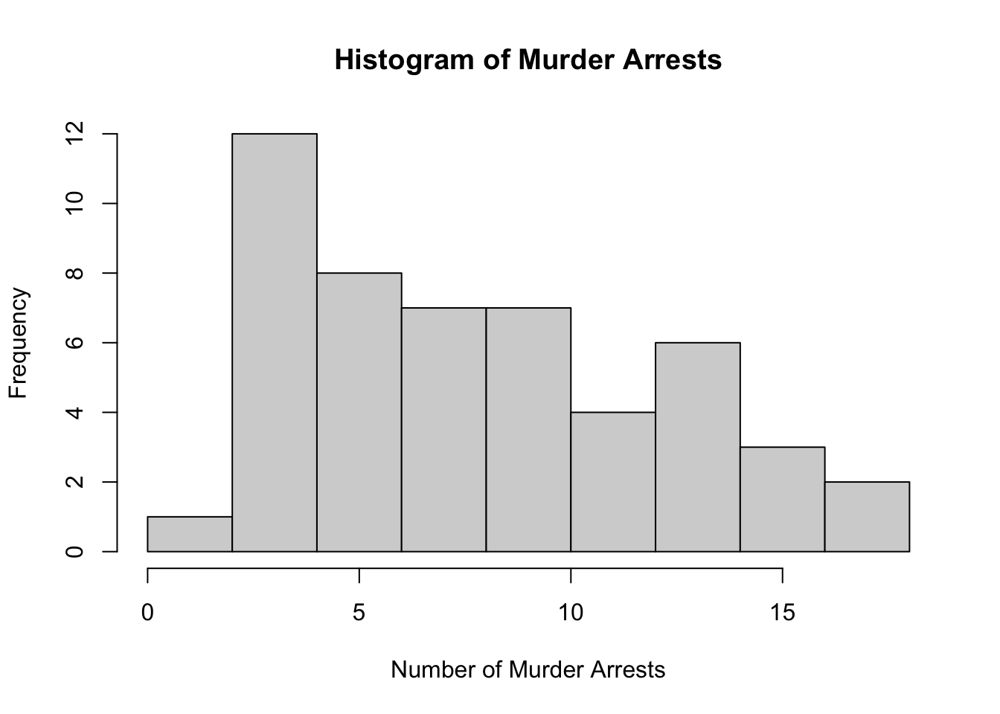
Problem 6
Please summarize Murder quantitatively. What are its mean and median? What is the difference between mean and median? What is a quartile, and why do you think R gives you the 1st Qu. and 3rd Qu.?
Answer to problem 6: The mean of murder is 7.788, the median of murder is 7.250. While mean and median are both measures of central tendency, they have relevant differences. Mean is an average of all of the numbers in the set. It is found by adding up all the numbers in the set and dividing that sum by the total number of variables in the set.The median is the number in the center when you line up all of the variables in numerical order.This means that half of the data lies below the median and the other half above.A quartile represents the three values in a sample that divide the distribution of the data into even fourths.This means that each quartile contains 25% of the data. I think that R gives you the first and third quartiles because these two measures bookend the interquartile range (IQR = Q3-Q1). The interquartile range represents the middle half of the values,and the size of the IQR reveals how spread out the data is. The higher the IQR, the more spread out the data is and vice versa.
#Summarizing Murder quantitatively (Problem 6)
summary(dat$Murder)## Min. 1st Qu. Median Mean 3rd Qu. Max.
## 0.800 4.075 7.250 7.788 11.250 17.400Problem 7
Repeat the same steps you followed for Murder, for the variables Assault and Rape. Now plot all three histograms together. You can do this by using the command par(mfrow=c(3,1)) and then plotting each of the three.
#Make a histogram of Assault with the proper axis titles (Problem 7)
hist(dat$Assault , xlab = "Number of Assaults Arrests" , main = "Histogram of Assault Arrests")#Make a histogram of Rape with proper axis titles (Problem 7)
hist(dat$Rape , xlab = "Number of Rape Arrests" , main = "Histogram of Rape Arrests")
#Make a plot of all 3 histograms (Murder, Assault, and Rape) together (Problem 7)
par(mfrow=c(3,1))
hist(dat$Murder, xlab = "Number of Murder Arrests", main = "Histogram of Murder Arrests")
hist(dat$Assault , xlab = "Number of Assault Arrests" , main = "Histogram of Assault Arrests")
hist(dat$Rape , xlab = "Number of Rape Arrests" , main = "Histogram of Rape Arrests")
What does the command par do, in your own words (you can look this up by asking R ?par)?
Answer: The command par is a way in which multiple plots can be viewed together.It essentially set the parameters for viewing graphs. For example, in this problem I wanted to display 3 graphs each with their own variables.The graphs all have the same y-axis (frequency) and all the x-axes are “number of.” This command allows the histograms to be viewed simultaneously and thus the data to be easily analyzed and compared.
What can you learn from plotting the histograms together?
Answer: By plotting the histograms together, you can learn about differences and similarities in the arrest rates for these 3 different categories.
Problem 8
In the console below (not in text), type install.packages("maps") and press Enter, and then type install.packages("ggplot2") and press Enter. This will install the packages so you can load the libraries.
Run this code:
library('maps')
library('ggplot2')
ggplot(dat, aes(map_id=state, fill=Murder)) +
geom_map(map=map_data("state")) +
expand_limits(x=map_data("state")$long, y=map_data("state")$lat)What does this code do? Explain what each line is doing.
Answer: The first two lines specify which library to find the right packages in in order to achieve the commands of the code below. The third line specifies Murder as the specific variable for the plot. The fourth line makes a map of the states filled with the state data. The fifth line designates the axes of the map and sets the plot limits, which determines the dimensions of the map.
Assignment 2
Problem 1
# Load data
# Read the data
dat <- read.csv(file = "data/Assignment 2 data copy.csv")
# What are the dimensions of the dataset?
dim(dat)## [1] 171 7Problem 2
## Variables
# Describe the variables in the dataset.
names(dat)## [1] "mjage" "cigage" "iralcage" "age2" "sexatract" "speakengl"
## [7] "irsex"“mjage”= age at which respondent first used marijuana or hashish “cigage”= age at which respondent first started smoking cigarettes every day “iralcage”= age at which respondent first tried alcohol “age2”= final edited ages since respondents could change their answer in the course of the survey “sexatract”= sexual attraction “speakengl”= how well respondent speaks english “irsex”= gender (male or female)
Answer:“mjage,” “cigage,” and “iralcage” are all quantitative numeric variables because they contain numerical values with measurement units and do not simply assign respondents to a group.They can also be evaluated for measures of central tendency such as mean, median, and mode.“age2,”“sexatract,” “speakengl,”and “irsex” are all categorical variables because they assign respondents to groups and cannot be quantitatively evaluated.
What is this data set about? Who collected the data, what kind of sample is it, and what was the purpose of generating the data? This data set is about drug use and health in the US and is aptly named, The National Survey on Drug Use and Health. More specifically,it tracked trends in substance use and mental illness. It is a representative sample of the general US civilian population aged 12 and up that was collected by the Substance Abuse and Mental Health Services Administration branch of the US Department of Health and Human Services. The purpose of generating the data was to provide information that would aid in prevention and treatment and estimate its need, monitor trends in substance use/abuse, and inform public policy regarding health.
Problem 3
## Age and gender
# What is the age distribution of the sample like? Make sure you read the code book to know what the variable values mean.
#Make a histogram of age.
hist(dat$age2 , main = "histogram of final age categories", xlab= "age category")Answer: The ages are weighted more toward the older age categories. Most of the respondents fell into the older age range of the data,between groups 12 and 16 and thus the ages 24-64. The majority of the data, and thus the ages lies in those two bins.
Do you think this age distribution representative of the US population? Why or why not?
Answer: I think this age distribution is representative of the US population because census data was used in conducting the survey. All 50 states plus DC were included and surveyors were sent to many houses that were randomly sampled and selected 2 members (12 or older) of the household to respond. This may be where there could be an issue with representation if younger members of the families or households were disproportionately selected.Another issue could be that they did not survey nursing homes or other institutional group quarters, which might skew the age distribution. Overall I think the methodology of sampling was such that this must be a representative sample of the age distribution of the US.
Is the sample balanced in terms of gender? If not, are there more females or males?
Answer: The sample does seem to be balanced in terms of gender except bins 6 and 7 are comprised of males only and bin 8 only females.Overall there are more males than females in the sample, and in terms of the split among age categories, men make up the majority of most of them.
# Use this code to draw a stacked bar plot to view the relationship between sex and age. What can you conclude from this plot?
tab.agesex <- table(dat$irsex, dat$age2)
barplot(tab.agesex,
main = "Stacked barchart",
xlab = "Age category", ylab = "Frequency",
legend.text = rownames(tab.agesex),
beside = FALSE) # Stacked bars (default)
Problem 4
## Substance use
#Make a boxplot
boxplot(dat$mjage , dat$cigage , dat$iralcage , names=c("Marijuana" , "Cigarettes" , "Alcohol"))For which of the three substances included in the dataset (marijuana, alcohol, and cigarettes) do individuals tend to use the substance earlier?
Answer:Individuals tend to use alcohol the earliest. Based on the boxplot, it has the lowest median age as well as the lowest minimum value.
Problem 5
## Sexual attraction
# What does the distribution of sexual attraction look like? Is this what you expected?
#Subset the data to remove legitimate skips
newdata<-subset(dat$sexatract,subset = dat$sexatract<7 )
#Make a histogram of the new sexattract data set
hist(newdata, xlab = "Sexual Attraction Rated on a Scale of 1-6", main = "Histogram of Sexual Attraction")Answer: The distribution of sexual attraction is skewed to the right, with most of the respondents selecting “1” on the scale, which means that they are only attracted to the opposite sex. The second most frequent response was “2” which means they are mostly attracted to the opposite sex.The lowest number of the respondents said that they were not sure which was response “6.” This is mostly expected because the majority of people in the US are heterosexual.
#What is the distribution of sexual attraction by gender?
#Make a data frame with sexatract and irsex variables included
dat5<-data.frame(dat$sexatract, dat$irsex)
table(dat5$dat.irsex, dat5$dat.sexatract)##
## 1 2 3 4 5 6 99
## 1 82 3 0 1 2 1 2
## 2 54 13 9 2 1 0 1Answer:More males than females responded “1” however more females than males gave “2,” “3,” “4,” and “6” as their answers.This suggests that women in this study were more likely to be mostly attracted to the same sex, equally attracted to both,mostly attracted to the same sex. Most men in the study are strictly heterosexual, while the women seem to see more variance.This answer is based on the table I made (non-graphical EDA)
Problem 6
## English speaking
# What does the distribution of English speaking look like in the sample? Is this what you might expect for a random sample of the US population?
hist(dat$speakengl, main = "How Well Respondents Speak English", xlab = "English Proficiency on a Scale of 1-4 (1 being 'very well' 4 being 'not at all'", xlim = c(1,4))Answer: A vast majority of the respondents report speaking English very well. While only a small proportion reported not speaking it well. No respondents reported not speaking English at all. This was definitely expected from a sample of the US population because, as English is the country’s official language, most people here speak it.
#Are there more English speaker females or males?
table(dat$speakengl,dat$irsex)##
## 1 2
## 1 84 77
## 2 7 1
## 3 0 2Answer:Almost equal numbers of men and women responded that they spoke English very well (response “1”), 84 and 77 respondents respectively.7 times more men than women reported speaking English well(response “2”), while only women and no men admitted that they did not speak English well (repsonse “3”).Total, there are more English speaker males than females, but this makes sense given that there are more men in the sample.
Exam 1
Instructions
Create a folder in your computer (a good place would be under Crim 250, Exams).
Download the dataset from the Canvas website (fatal-police-shootings-data.csv) onto that folder, and save your Exam 1.Rmd file in the same folder.
Download the README.md file. This is the codebook.
Load the data into an R data frame.
dat <- (read.csv(file="data/fatal-police-shootings-data-copy.csv"))Problem 1 (10 points)
- Describe the dataset. This is the source: https://github.com/washingtonpost/data-police-shootings . Write two sentences (max.) about this.
This dataset contains data for all of the fatal shootings by police in the US that have occurred since the beginning of 2015. Within the dataset is information about the name of the victim, date of shooting, whether they were armed, their age, gender, race, whether they were mentally ill, whether they were threatening, whether they were fleeing,presence of a body camera, and where it occurred.
- How many observations are there in the data frame?
dim(dat)## [1] 6594 17There are 6,594 different observations of 17 different variables.
- Look at the names of the variables in the data frame. Describe what “body_camera”, “flee”, and “armed” represent, according to the codebook. Again, only write one sentence (max) per variable.
names(dat)## [1] "id" "name"
## [3] "date" "manner_of_death"
## [5] "armed" "age"
## [7] "gender" "race"
## [9] "city" "state"
## [11] "signs_of_mental_illness" "threat_level"
## [13] "flee" "body_camera"
## [15] "longitude" "latitude"
## [17] "is_geocoding_exact"“body_camera”:Body camera refers to news reports that indicate whether the officer was wearing a body camera that may have recorded all or a portion of the incident. “flee”: Flee refers to whether the victim was moving away from the officer, as indicated by news reports. “armed”: Armed refers to whether or not the victim was in possession of a weapon (or an item that a police officer would perceive as harmful) during the time of the shooting.
- What are three weapons that you are surprised to find in the “armed” variable? Make a table of the values in “armed” to see the options.
table(dat$armed)##
## air conditioner
## 207 1
## air pistol Airsoft pistol
## 1 3
## ax barstool
## 24 1
## baseball bat baseball bat and bottle
## 20 1
## baseball bat and fireplace poker baseball bat and knife
## 1 1
## baton BB gun
## 6 15
## BB gun and vehicle bean-bag gun
## 1 1
## beer bottle binoculars
## 3 1
## blunt object bottle
## 5 1
## bow and arrow box cutter
## 1 13
## brick car, knife and mace
## 2 1
## carjack chain
## 1 3
## chain saw chainsaw
## 2 1
## chair claimed to be armed
## 4 1
## contractor's level cordless drill
## 1 1
## crossbow crowbar
## 9 5
## fireworks flagpole
## 1 1
## flashlight garden tool
## 2 2
## glass shard grenade
## 4 1
## gun gun and car
## 3798 12
## gun and knife gun and machete
## 22 3
## gun and sword gun and vehicle
## 1 17
## guns and explosives hammer
## 3 18
## hand torch hatchet
## 1 14
## hatchet and gun ice pick
## 2 1
## incendiary device knife
## 2 955
## knife and vehicle lawn mower blade
## 1 2
## machete machete and gun
## 51 1
## meat cleaver metal hand tool
## 6 2
## metal object metal pipe
## 5 16
## metal pole metal rake
## 4 1
## metal stick microphone
## 3 1
## motorcycle nail gun
## 1 1
## oar pellet gun
## 1 3
## pen pepper spray
## 1 2
## pick-axe piece of wood
## 4 7
## pipe pitchfork
## 7 2
## pole pole and knife
## 3 2
## railroad spikes rock
## 1 7
## samurai sword scissors
## 4 9
## screwdriver sharp object
## 16 14
## shovel spear
## 7 2
## stapler straight edge razor
## 1 5
## sword Taser
## 23 34
## tire iron toy weapon
## 4 226
## unarmed undetermined
## 421 188
## unknown weapon vehicle
## 82 213
## vehicle and gun vehicle and machete
## 8 1
## walking stick wasp spray
## 1 1
## wrench
## 1I am surprised to see beer bottle, binoculars, and air conditioner as weapons in the “armed” variable because it is difficult to conceive how these could be perceived as harmful, especially when the police officer himself has a gun.
Problem 2 (10 points)
- Describe the age distribution of the sample. Is this what you would expect to see?
hist(dat$age , xlab = "Age of Shooting Victim", main = "Distribution of Age")The age of the shooting victims is most concentrated between the ages of 20 and 40. This is generally what I would expect to see because 20 year olds are the most likely age category to commit to crime any way. Also, it is unlikely that a police officer would see someone over 60 or under 15 years old as a threat, which is why these age ranges are the least frequent in the dataset.
- To understand the center of the age distribution, would you use a mean or a median, and why? Find the one you picked.
summary(dat$age)## Min. 1st Qu. Median Mean 3rd Qu. Max. NA's
## 6.00 27.00 35.00 37.12 45.00 91.00 308To understand the center of the age distribution, you would use median because the data is skewed to the right. When data is skewed, median is a better measure of central tendency because it gives outliers or infrequent numbers less weight. The median of the age variable is 35.00.
- Describe the gender distribution of the sample. Do you find this surprising?
table(dat$gender)##
## F M
## 3 293 6298The gender distribution is very heavily weighted toward toward males. They outnumber the females by almost 20 times. This is not surprising because males are more likely to be perceived as threatening and to be criminal offenders.
Problem 3 (10 points)
- How many police officers had a body camera, according to news reports? What proportion is this of all the incidents in the data? Are you surprised that it is so high or low?
table(dat$body_camera)##
## False True
## 5684 910According to the news report, 910 police officers had a body camera. This is less than 14% of all of the incidents in the dataset. I am surprised that it is so low because I was under the impression that body cams were a required for all police officers to wear.
- In how many of the incidents was the victim fleeing? What proportion is this of the total number of incidents in the data? Is this what you would expect?
table(dat$flee)##
## Car Foot Not fleeing Other
## 491 1058 845 3952 248The victim was fleeing in 1,912 of the incidents. This represents apporoximately 1/6 of all the incidents recorded in the dataset. This is a little less than what I would expect because it is logical that a criminal would flee from a police officer in the hopes of not getting caught.
Problem 4 (10 points) - Answer only one of these (a or b).
- Describe the relationship between the variables “body camera” and “flee” using a stacked barplot. What can you conclude from this relationship?
Hint 1: The categories along the x-axis are the options for “flee”, each bar contains information about whether the police officer had a body camera (vertically), and the height along the y-axis shows the frequency of that category).
Hint 2: Also, if you are unsure about the syntax for barplot, run ?barplot in R and see some examples at the bottom of the documentation. This is usually a good way to look up the syntax of R code. You can also Google it.
#$library(ggplot2)
#ggplot(dat, aes(fill= dat$body_camera, y= frequency, x= dat$flee)) + #geom_bar(position="stack", stat="identity")
#just so you know what I was thinking for my codeYour answer here.
- Describe the relationship between age and race by using a boxplot. What can you conclude from this relationship?
Hint 1: The categories along the x-axis are the race categories and the height along the y-axis is age.
Hint 2: Also, if you are unsure about the syntax for boxplot, run ?boxplot in R and see some examples at the bottom of the documentation. This is usually a good way to look up the syntax of R code. You can also Google it.
table(dat$race)##
## A B H N O W
## 752 106 1553 1083 91 47 2962class(dat$race)## [1] "character"dat$age## [1] 53 47 23 32 39 18 22 35 34 47 25 31 41 30 37 28 42 36 49 71 33 39 23 29
## [25] 34 43 24 29 34 75 68 34 27 39 24 36 33 41 48 21 24 27 32 67 49 42 36 36
## [49] 19 54 25 17 29 56 61 45 26 40 26 59 17 68 24 34 39 26 29 33 45 26 35 31
## [73] 42 48 31 54 42 17 59 23 38 29 45 28 37 28 28 51 36 59 25 26 74 33 27 57
## [97] 46 41 61 45 49 45 35 23 46 23 21 35 27 37 16 51 34 34 25 56 26 24 43 31
## [121] 32 30 50 20 31 38 77 NA 41 51 50 47 37 41 16 42 39 30 27 43 42 21 49 34
## [145] 31 27 24 34 28 28 40 37 17 35 49 43 20 25 25 26 28 45 36 34 19 37 48 29
## [169] 43 40 35 27 58 46 30 64 31 23 37 37 31 39 31 54 53 25 35 41 59 36 32 53
## [193] 26 29 27 28 52 49 24 24 20 22 49 64 47 39 18 31 16 20 36 63 34 24 21 44
## [217] 60 42 37 36 21 24 29 57 38 23 27 28 63 53 35 26 42 41 56 39 23 40 29 26
## [241] 54 49 36 21 27 37 36 32 44 27 63 38 17 31 34 50 51 56 23 25 31 32 60 42
## [265] 39 28 22 29 31 28 54 21 38 66 36 83 32 27 26 31 22 41 41 51 72 52 47 18
## [289] 29 23 43 45 40 44 25 37 59 35 35 18 51 30 31 39 26 51 19 46 49 63 20 25
## [313] 24 58 29 76 45 20 58 21 27 26 33 27 25 53 53 42 22 52 36 30 34 44 53 36
## [337] 29 32 46 18 72 38 21 35 58 48 31 47 34 30 28 28 40 46 37 53 41 42 45 34
## [361] 18 27 54 35 17 29 38 26 52 39 22 29 43 24 32 40 47 40 25 31 36 51 24 62
## [385] 39 24 57 20 33 60 32 40 18 36 35 55 19 39 40 47 23 26 26 18 33 56 46 36
## [409] 50 45 53 45 42 27 30 36 58 54 30 69 30 45 22 28 19 40 86 46 28 22 17 46
## [433] 35 35 28 15 22 28 31 40 48 58 44 21 50 23 24 49 60 35 29 20 34 22 49 32
## [457] 26 41 61 49 28 35 29 51 52 24 32 45 60 23 59 46 33 39 27 42 37 23 36 19
## [481] 35 43 25 20 42 29 42 31 18 33 59 47 39 37 35 28 59 62 50 68 27 17 21 38
## [505] 54 20 25 31 35 60 24 27 36 20 24 23 41 20 76 43 29 35 30 24 23 29 25 27
## [529] 50 19 24 23 22 46 65 43 35 54 47 24 35 25 27 26 34 32 47 44 31 44 30 60
## [553] 50 36 59 33 19 56 45 22 41 34 53 48 25 30 47 33 34 52 29 63 49 18 71 35
## [577] 55 31 18 51 39 20 29 40 42 22 19 24 30 53 25 28 33 24 59 46 15 41 77 22
## [601] 24 34 48 24 27 27 27 49 30 38 26 30 53 23 34 30 43 29 47 35 40 18 24 29
## [625] 44 17 19 50 57 30 38 31 29 26 64 39 57 36 36 21 53 30 34 53 45 22 22 46
## [649] 27 30 54 29 42 41 28 61 23 25 43 29 20 40 45 33 76 47 45 40 37 27 36 23
## [673] 49 21 32 35 27 59 28 45 45 19 25 37 33 59 31 35 29 32 41 31 44 23 45 39
## [697] 67 29 25 28 21 32 51 39 27 31 50 61 32 47 46 57 23 56 24 27 23 26 34 21
## [721] 32 33 55 26 48 35 19 45 28 42 17 30 21 45 33 46 23 37 43 40 59 31 46 37
## [745] 28 28 55 29 26 45 27 31 51 49 27 18 39 46 19 62 49 31 38 40 35 34 44 23
## [769] 43 NA 31 27 46 18 59 57 15 25 50 31 35 27 20 27 45 33 27 22 28 31 28 53
## [793] 30 39 40 30 21 35 21 47 38 36 53 34 34 30 28 47 49 NA 36 45 21 18 25 29
## [817] 57 34 35 NA 18 62 29 25 30 24 52 33 56 49 20 62 62 6 30 57 18 47 48 20
## [841] 30 36 51 55 48 20 25 26 45 35 34 36 22 63 31 25 57 32 42 52 25 25 31 39
## [865] 16 24 32 25 28 28 21 30 58 47 41 25 44 34 27 34 29 39 50 24 47 45 28 50
## [889] 49 45 24 32 23 52 37 26 58 50 22 53 69 23 29 25 18 31 23 18 35 27 28 26
## [913] 32 36 66 21 47 24 60 61 38 51 35 46 48 36 33 66 51 34 55 54 NA 36 25 24
## [937] 28 36 20 49 NA 51 21 30 32 33 56 48 39 19 45 33 52 51 23 25 24 22 32 58
## [961] 26 30 31 34 48 NA 21 39 25 30 61 56 29 19 35 36 54 24 23 18 31 41 55 19
## [985] 38 36 34 52 28 50 NA 55 39 23 30 54 37 37 30 27 22 29 39 33 52 28 54 38
## [1009] 32 34 26 50 37 45 56 45 32 12 49 58 29 60 40 39 26 24 34 27 44 25 55 19
## [1033] 52 31 26 24 38 33 28 27 39 29 36 55 28 40 33 37 39 43 38 55 52 32 31 27
## [1057] 40 31 30 26 32 33 19 33 29 41 29 38 64 42 46 62 42 37 25 36 21 30 53 31
## [1081] 22 24 36 47 54 43 38 30 51 55 16 23 36 27 33 17 22 22 29 41 67 36 52 56
## [1105] 35 45 30 24 29 53 32 22 24 19 29 50 29 26 39 52 51 48 30 37 30 35 32 25
## [1129] 35 31 30 23 41 45 46 36 31 32 38 33 45 38 22 48 36 26 39 16 58 27 26 21
## [1153] 37 56 38 18 35 23 41 44 24 39 22 37 36 41 27 66 30 34 22 51 42 41 49 45
## [1177] 45 42 41 27 37 22 21 50 23 25 51 46 23 43 37 20 45 16 30 26 24 38 28 29
## [1201] 34 38 43 23 33 40 38 53 29 30 49 60 25 24 21 23 61 54 62 16 25 28 76 25
## [1225] 33 51 34 30 44 24 29 48 19 22 39 36 55 46 34 27 33 18 33 51 50 46 33 25
## [1249] 52 18 43 34 31 65 37 30 36 25 69 48 50 52 44 60 40 20 45 44 40 25 43 27
## [1273] 19 39 30 28 22 16 40 38 20 35 52 26 54 38 52 26 53 35 22 31 32 37 28 18
## [1297] 41 15 38 41 52 48 29 51 21 24 18 30 33 60 28 26 24 44 34 21 36 37 53 24
## [1321] 45 48 42 33 55 28 25 28 52 59 52 39 18 40 36 38 26 NA 29 37 29 21 33 23
## [1345] 26 59 29 33 28 35 33 24 NA 28 19 43 59 34 35 23 36 46 44 20 30 29 35 36
## [1369] 22 31 63 38 31 27 35 22 28 26 22 57 31 43 24 29 43 NA 21 19 48 25 59 50
## [1393] 58 25 32 53 38 70 33 36 NA 21 51 43 18 33 34 31 35 31 31 23 25 25 21 49
## [1417] 63 43 34 38 52 68 NA 29 32 50 31 27 31 29 23 61 33 18 80 43 50 47 54 22
## [1441] 43 38 36 30 59 21 34 17 37 25 30 23 20 19 50 24 25 20 37 44 22 31 25 NA
## [1465] 29 36 50 42 42 26 19 59 36 51 27 22 30 28 63 32 26 25 27 61 30 NA 37 41
## [1489] 25 24 44 63 58 30 35 50 40 24 19 34 18 21 NA 29 49 24 37 32 65 37 33 63
## [1513] 30 40 38 50 41 41 39 44 23 32 56 33 63 31 57 26 39 42 29 43 56 31 50 36
## [1537] 50 49 31 34 36 29 32 18 50 36 17 19 24 24 20 33 41 47 18 31 27 36 40 59
## [1561] 32 38 18 23 43 67 32 22 31 43 34 51 31 54 69 58 26 31 59 25 20 57 56 64
## [1585] 34 69 45 14 44 59 33 54 22 49 23 38 53 36 29 42 36 32 53 30 25 18 55 27
## [1609] 37 29 40 36 38 29 59 47 22 31 29 54 71 36 34 49 36 43 53 31 32 63 41 26
## [1633] 82 49 37 24 35 56 28 22 59 36 36 21 38 60 18 23 NA 38 40 22 38 25 25 36
## [1657] NA NA 44 36 35 25 65 31 70 25 55 35 25 32 38 32 64 55 69 37 31 86 25 25
## [1681] 13 32 69 34 46 29 29 40 42 25 45 55 22 61 46 30 56 35 22 43 43 49 23 41
## [1705] 33 30 25 52 32 46 48 38 26 32 28 53 38 18 32 37 18 20 28 18 16 36 57 49
## [1729] 31 26 51 28 35 57 36 42 NA 49 21 39 53 62 41 40 50 27 19 26 44 30 31 33
## [1753] 22 50 38 46 23 24 26 38 26 32 50 17 39 28 66 42 34 38 24 28 29 23 58 21
## [1777] 45 38 40 19 46 25 25 37 25 36 32 33 24 37 38 45 31 34 23 38 39 55 31 76
## [1801] 59 40 23 64 56 26 35 49 36 56 59 34 43 31 17 32 33 43 31 23 26 45 19 36
## [1825] 41 53 24 NA 47 NA 40 29 22 21 38 48 25 37 37 56 25 26 35 25 48 29 55 21
## [1849] 15 24 18 19 27 45 36 34 23 43 19 45 37 23 26 20 59 33 48 50 18 23 41 41
## [1873] 55 29 31 25 38 NA 83 22 33 36 38 26 29 55 47 52 49 37 36 20 31 NA 30 NA
## [1897] 35 35 36 39 30 44 24 53 73 31 28 18 32 60 36 48 33 44 20 37 72 52 31 46
## [1921] NA 31 25 46 38 25 NA 24 19 55 NA 31 53 NA 48 29 30 33 61 35 71 41 36 28
## [1945] 52 21 NA 31 46 32 33 42 17 35 23 21 44 53 63 18 51 64 45 20 41 23 25 42
## [1969] 41 31 50 38 44 38 21 32 23 41 41 38 54 20 26 29 47 28 48 34 37 33 36 43
## [1993] 32 29 39 40 21 50 19 28 16 49 44 25 39 44 50 57 57 33 21 52 27 60 25 34
## [2017] 22 26 27 29 30 32 18 37 54 50 28 59 24 34 25 25 17 48 45 53 18 50 36 45
## [2041] 42 NA 23 31 26 57 18 27 41 33 22 38 26 45 68 56 23 45 41 33 22 50 52 35
## [2065] 18 34 51 18 29 34 25 17 NA 26 33 25 31 25 18 45 25 23 55 37 33 27 32 NA
## [2089] 31 26 32 53 19 53 35 64 24 33 55 17 48 21 22 30 34 35 32 22 46 27 18 33
## [2113] 26 27 26 51 63 38 25 39 41 26 30 33 54 38 24 47 62 30 33 23 39 41 46 36
## [2137] 66 27 40 25 20 43 40 33 34 27 25 37 32 25 38 50 26 70 38 41 91 NA 25 29
## [2161] 24 40 51 30 28 33 23 23 20 56 36 18 43 16 29 25 34 32 58 36 32 25 59 25
## [2185] 25 42 36 59 21 19 45 NA 42 27 45 51 42 24 39 18 26 35 53 54 36 56 51 45
## [2209] 28 36 73 26 41 59 28 45 27 46 34 30 46 47 32 65 19 22 39 38 68 49 37 33
## [2233] 25 36 36 30 39 28 28 25 57 33 24 NA 33 56 56 16 47 33 32 21 64 19 26 25
## [2257] 17 55 25 43 39 24 70 79 16 35 15 23 53 20 27 53 32 57 26 53 32 25 15 59
## [2281] 35 33 32 49 46 25 20 48 NA 24 18 67 26 54 15 27 26 62 24 32 29 15 25 40
## [2305] 39 34 36 24 50 50 NA 30 35 46 51 37 41 41 48 27 29 47 NA 34 48 41 25 24
## [2329] 38 28 47 65 58 33 43 24 37 31 65 59 74 21 24 NA 23 59 33 34 30 30 NA 22
## [2353] 35 37 20 62 18 24 17 27 51 29 34 18 17 55 44 27 66 45 47 34 37 54 50 21
## [2377] 21 35 75 33 45 48 58 30 44 82 29 25 53 60 19 63 50 35 45 24 36 35 33 66
## [2401] 54 20 40 41 30 32 24 37 28 48 30 64 21 28 36 40 32 50 28 33 37 17 20 34
## [2425] 37 24 47 20 56 24 47 56 36 35 NA 37 45 41 23 37 32 23 33 23 37 19 39 53
## [2449] 51 25 45 NA 28 36 32 39 46 53 42 34 29 53 45 24 51 35 27 33 15 30 22 23
## [2473] 50 28 34 24 54 26 39 34 27 48 47 54 33 40 58 55 47 42 29 40 23 23 25 52
## [2497] 43 37 32 70 36 24 24 38 52 27 22 42 70 49 59 41 34 31 23 28 33 16 35 26
## [2521] 62 25 25 31 35 46 39 26 37 32 31 48 29 32 28 43 39 37 39 42 33 25 29 45
## [2545] 27 28 57 15 33 35 47 31 36 54 24 35 32 28 45 29 36 23 17 20 33 49 NA 31
## [2569] 35 24 54 41 50 46 45 20 37 34 54 65 28 60 26 25 32 44 32 NA 42 66 22 51
## [2593] 64 30 71 30 48 56 26 28 19 24 44 28 47 18 26 33 34 62 24 55 68 22 46 27
## [2617] 32 22 54 32 45 36 NA 37 47 30 31 44 52 NA 67 16 29 42 31 41 45 50 26 22
## [2641] 76 58 32 19 25 48 39 31 50 15 48 32 21 37 21 40 33 25 55 53 NA 27 35 25
## [2665] 31 70 40 25 38 26 27 NA 28 40 44 39 24 32 31 50 31 50 45 44 48 39 30 44
## [2689] 28 24 27 34 41 26 38 33 22 40 34 48 37 67 35 29 28 40 31 51 47 52 28 35
## [2713] 25 NA 34 58 24 22 46 55 61 43 44 35 29 57 42 44 25 20 32 34 18 31 24 35
## [2737] 34 26 55 38 23 54 30 44 37 27 43 25 30 35 31 35 37 25 34 33 33 32 46 34
## [2761] 46 40 27 17 46 50 41 23 33 25 27 39 22 37 27 28 56 71 NA 53 43 44 39 56
## [2785] 24 35 30 31 20 35 31 49 54 48 32 35 30 32 31 14 25 32 35 27 23 55 43 62
## [2809] 25 NA 50 19 41 55 19 67 24 44 23 51 29 48 22 NA 59 68 25 23 46 25 30 56
## [2833] 24 18 34 27 26 15 26 32 17 32 43 26 51 39 43 31 22 26 40 64 30 59 NA 24
## [2857] 32 37 33 42 37 33 62 46 69 24 42 71 49 35 19 40 34 22 16 69 24 28 26 48
## [2881] NA 51 50 NA NA 20 34 57 NA 30 27 NA 52 52 48 56 24 NA 33 56 35 NA 6 30
## [2905] 26 51 40 62 32 26 46 20 25 NA 28 44 31 40 46 28 30 38 34 36 25 28 38 20
## [2929] 37 30 35 31 36 39 37 32 65 42 65 30 49 66 28 27 31 46 28 35 24 17 39 21
## [2953] 21 57 27 62 40 38 27 54 27 51 NA 25 46 20 32 27 21 60 44 23 31 43 39 54
## [2977] 22 36 37 42 22 42 32 30 53 27 72 29 34 26 22 16 31 58 23 44 46 61 17 46
## [3001] 35 36 28 37 47 35 40 38 24 18 38 54 27 62 66 47 19 27 23 42 43 42 45 21
## [3025] 43 45 33 38 33 46 52 46 40 20 39 35 31 32 56 37 32 28 26 38 27 NA NA 43
## [3049] 49 16 35 19 59 29 65 37 22 40 35 39 36 78 25 41 63 48 42 39 NA 84 33 52
## [3073] 48 NA 30 29 27 41 57 27 58 59 39 28 28 23 55 33 41 23 45 37 21 27 39 37
## [3097] 22 26 27 37 58 62 25 36 NA 27 37 25 40 22 29 20 33 48 47 40 29 29 44 36
## [3121] 31 48 49 38 70 41 NA 28 33 44 65 NA 35 25 40 36 55 19 70 37 53 84 46 29
## [3145] NA 27 32 32 27 38 20 45 32 48 57 34 16 47 61 32 31 46 27 31 26 31 NA 27
## [3169] 49 26 28 62 34 50 NA 23 40 50 50 27 35 32 56 20 56 39 47 25 21 18 36 35
## [3193] 29 32 20 30 40 48 NA 23 42 20 25 28 34 41 24 29 33 44 31 26 51 64 29 61
## [3217] 44 39 35 39 60 42 27 21 33 60 24 41 41 34 23 38 58 49 27 34 34 70 44 30
## [3241] 81 40 27 26 18 59 56 22 26 34 23 36 48 33 24 25 20 45 29 34 23 29 44 39
## [3265] 30 28 71 25 61 39 50 NA 23 39 45 NA 34 31 55 39 32 44 24 36 41 25 39 40
## [3289] 32 45 31 32 48 49 48 18 48 25 27 37 44 27 NA NA 41 42 36 89 37 22 56 35
## [3313] 36 46 26 41 38 42 47 26 64 59 NA NA 49 44 48 27 67 24 26 28 21 54 24 51
## [3337] 59 21 73 39 32 38 32 26 55 50 49 48 65 37 37 45 33 46 33 51 51 33 51 52
## [3361] 24 55 28 36 54 38 24 20 54 53 36 24 34 59 34 NA 29 24 77 30 36 36 58 47
## [3385] 49 31 25 20 30 33 29 NA 31 51 42 67 NA 23 34 51 19 29 23 46 42 21 55 NA
## [3409] 43 32 NA 34 40 55 20 24 43 56 47 33 20 28 50 36 47 36 49 34 41 29 34 34
## [3433] 22 26 32 NA 44 21 NA 29 18 33 28 NA 40 40 53 37 47 30 48 33 44 65 20 17
## [3457] 55 33 29 44 37 32 31 NA 20 30 25 NA 47 48 38 32 18 29 30 36 39 36 36 54
## [3481] 27 45 19 36 33 56 NA 33 60 26 52 40 33 41 35 32 34 26 62 33 55 38 43 38
## [3505] 27 52 NA 37 NA 34 41 40 53 21 45 34 22 25 16 37 68 25 34 23 25 57 27 51
## [3529] 30 33 NA 19 22 37 19 33 38 45 39 21 56 27 50 16 18 38 32 33 71 30 39 19
## [3553] 44 54 29 NA 56 64 25 43 18 36 24 30 53 60 32 25 44 32 33 NA NA 35 23 27
## [3577] 53 35 41 57 18 34 49 31 29 33 38 43 58 29 68 62 39 59 24 70 42 26 24 48
## [3601] NA 54 48 37 40 28 43 49 35 21 40 32 48 32 31 NA 58 30 21 15 30 28 21 42
## [3625] 33 NA 36 38 34 23 44 20 41 18 29 37 41 25 20 34 37 18 72 17 45 49 64 36
## [3649] 61 24 70 40 21 27 23 33 45 19 28 63 NA 43 39 53 57 32 38 36 46 31 40 31
## [3673] 50 29 40 25 31 23 54 44 43 37 55 40 26 29 29 44 42 20 34 41 29 19 32 23
## [3697] 41 37 24 54 58 40 27 40 23 33 26 36 38 25 45 NA 31 48 43 51 36 39 22 24
## [3721] 36 25 30 76 39 26 49 21 31 NA 22 34 27 26 84 17 17 55 22 41 58 45 29 19
## [3745] 18 NA 61 18 23 38 19 63 21 25 35 50 34 NA NA 26 61 18 37 27 24 37 45 28
## [3769] 44 30 30 34 27 28 42 32 24 17 26 35 25 65 33 25 29 18 19 39 61 36 72 48
## [3793] 67 68 NA 34 36 33 30 61 41 52 26 NA 39 36 47 NA 25 63 24 38 22 59 55 29
## [3817] 18 29 25 48 60 NA 49 27 NA 65 41 71 33 22 52 42 48 24 NA 21 20 59 46 23
## [3841] 32 23 19 64 35 41 42 NA 35 33 32 37 46 37 19 65 30 43 18 27 41 41 33 53
## [3865] 42 46 51 16 41 24 23 50 41 23 33 25 30 58 47 22 27 29 43 18 19 37 42 57
## [3889] 35 50 60 35 46 47 NA NA 31 24 27 27 NA NA NA 23 57 56 36 NA NA 24 34 17
## [3913] 21 35 34 56 35 46 42 49 44 45 36 45 34 18 26 28 35 20 33 39 63 27 33 27
## [3937] 31 33 39 27 32 29 81 28 50 55 42 NA NA 36 38 38 35 42 53 33 70 29 26 20
## [3961] 30 19 NA 48 58 38 28 34 43 45 62 18 25 38 33 39 58 48 14 18 22 46 NA NA
## [3985] 57 32 31 64 35 42 30 26 37 21 20 46 NA 20 46 24 26 60 48 69 25 29 58 59
## [4009] 46 55 27 30 52 45 51 27 47 52 24 45 47 68 40 18 35 80 44 31 20 48 43 25
## [4033] 38 34 58 38 29 40 49 25 32 21 57 28 25 58 34 34 24 32 58 20 19 46 28 47
## [4057] 47 34 NA 45 17 34 48 37 32 20 31 16 24 39 26 30 36 28 21 36 28 24 29 44
## [4081] 41 38 40 20 27 51 48 40 21 29 34 20 47 29 49 33 46 35 NA 40 36 63 27 17
## [4105] 22 22 36 21 31 56 32 25 47 NA 23 34 51 35 46 59 40 30 34 44 31 51 34 45
## [4129] 32 31 41 29 47 30 27 27 38 33 42 25 47 53 77 48 33 36 22 29 52 61 29 37
## [4153] 26 32 19 45 22 57 46 27 26 30 18 25 51 40 47 38 39 30 43 42 25 22 30 33
## [4177] 24 31 25 28 19 31 29 48 53 50 55 NA 37 30 26 36 24 35 42 37 28 32 33 27
## [4201] 21 47 57 20 34 34 30 29 28 39 54 27 32 32 47 33 42 NA 24 24 42 34 46 40
## [4225] 30 42 30 63 18 29 42 32 46 50 29 29 51 23 43 23 47 45 42 26 29 49 17 NA
## [4249] 45 NA 51 37 NA 28 52 76 37 NA 37 25 35 35 61 33 34 59 32 31 49 31 29 25
## [4273] 26 NA 39 43 26 36 45 45 54 43 NA 30 NA 58 39 40 36 27 20 17 59 47 45 46
## [4297] 34 46 26 21 29 33 32 47 22 NA 41 28 56 41 35 59 30 48 49 41 21 62 NA 32
## [4321] 22 58 32 26 35 27 35 38 23 59 23 43 41 56 45 28 NA 54 39 24 41 27 70 NA
## [4345] 35 26 58 46 39 33 20 38 41 32 NA 24 19 27 40 61 56 52 20 35 17 22 NA 45
## [4369] 20 18 28 38 NA 53 31 48 20 35 22 18 34 74 33 38 38 26 41 29 19 61 34 35
## [4393] NA 43 50 32 50 54 35 33 18 50 41 37 76 NA 19 40 61 61 22 52 23 67 44 23
## [4417] NA 39 53 39 26 38 49 34 47 34 58 17 21 37 43 61 28 41 43 23 36 23 26 36
## [4441] 32 62 33 32 69 35 46 46 22 20 30 49 43 52 62 56 36 40 52 35 35 73 39 53
## [4465] 23 19 41 39 28 28 NA 53 27 31 38 38 41 49 56 NA 62 69 NA 31 37 NA 28 46
## [4489] 42 46 21 27 30 36 54 48 55 34 45 19 32 35 32 25 24 65 29 49 19 56 39 43
## [4513] 57 49 18 27 52 NA 52 37 62 57 45 46 49 38 31 51 NA 51 20 37 49 31 26 NA
## [4537] 25 NA 62 27 33 38 69 39 NA 18 27 50 54 57 NA 29 39 46 31 34 52 33 NA 37
## [4561] 67 52 62 30 28 16 NA NA 51 35 23 NA 23 47 36 37 49 49 NA 35 17 43 30 34
## [4585] 46 29 62 53 28 65 43 42 30 40 51 24 27 41 47 26 20 18 NA 29 35 77 25 31
## [4609] 54 33 76 28 31 NA 53 33 37 NA 57 NA 36 39 43 44 33 49 18 74 21 57 29 58
## [4633] 74 63 28 31 41 67 63 64 32 49 28 NA NA 31 NA 20 38 27 38 37 36 35 50 75
## [4657] 32 34 61 24 37 33 55 42 37 55 31 54 37 48 28 31 48 58 56 40 19 28 32 21
## [4681] 57 17 22 26 NA 31 61 54 28 30 30 28 26 28 21 31 27 34 22 46 29 38 51 61
## [4705] 34 30 33 21 39 37 36 55 34 47 61 29 29 44 53 31 45 19 40 33 NA NA 45 NA
## [4729] 27 63 50 25 39 42 25 24 NA 67 NA 62 34 33 56 46 41 38 22 42 29 56 32 NA
## [4753] 31 21 31 48 58 32 45 37 20 34 31 26 32 66 37 38 29 44 28 22 59 56 20 39
## [4777] 30 27 NA 37 52 35 33 NA 27 NA 27 41 28 26 NA 34 34 38 32 50 55 51 18 42
## [4801] 36 37 28 24 34 22 42 48 51 40 34 30 31 54 46 60 40 NA 40 68 68 60 16 25
## [4825] 20 21 38 28 18 NA 26 31 58 31 41 41 41 23 17 35 65 51 47 42 42 31 23 50
## [4849] 47 66 55 68 31 24 30 34 23 43 22 43 22 42 65 18 23 52 40 27 34 25 28 NA
## [4873] 27 41 63 27 29 38 29 47 28 38 21 44 61 25 40 26 57 57 24 34 46 38 24 34
## [4897] 65 60 56 59 23 35 35 16 NA 42 43 52 31 27 31 34 76 29 34 NA 18 51 25 28
## [4921] 37 NA 23 57 49 24 29 20 25 26 69 26 41 31 30 25 57 17 27 30 18 50 21 28
## [4945] 28 25 33 59 34 27 37 30 41 47 34 24 25 NA 47 49 31 47 52 29 45 51 55 35
## [4969] 50 31 47 35 66 19 19 43 57 31 41 39 24 20 32 22 60 40 37 34 22 30 26 29
## [4993] 32 32 27 31 35 19 34 32 43 22 43 27 39 37 20 34 32 41 15 52 29 53 24 41
## [5017] 17 44 63 56 23 32 26 41 56 33 37 41 38 32 67 46 45 23 48 31 47 40 40 34
## [5041] 51 33 25 42 41 19 37 21 63 NA 58 16 31 33 40 34 29 27 23 38 17 75 26 40
## [5065] NA 30 36 83 27 28 20 38 39 19 23 16 23 56 35 30 30 30 54 NA 36 33 39 22
## [5089] 49 45 45 30 30 21 NA 31 34 73 49 39 37 73 NA 31 25 41 24 27 NA 32 33 43
## [5113] 65 84 29 31 57 37 29 47 44 38 32 21 47 26 30 62 41 50 NA 48 31 30 32 30
## [5137] 20 38 25 47 19 35 58 NA 18 55 42 39 61 51 28 33 47 39 31 18 23 30 28 55
## [5161] 46 50 34 32 45 31 19 53 55 32 46 26 NA 51 49 46 22 38 44 37 52 29 29 NA
## [5185] 19 66 40 30 69 27 26 59 62 NA 39 67 54 29 37 33 31 38 28 45 59 17 19 36
## [5209] 39 NA 33 48 31 29 51 54 35 56 NA 36 31 33 39 58 39 24 48 28 31 NA 43 33
## [5233] 37 24 40 28 24 27 40 31 38 35 42 34 42 28 24 53 67 59 61 48 26 28 33 32
## [5257] 26 50 38 29 27 28 43 21 36 24 NA 32 26 21 54 44 69 45 26 43 38 28 36 21
## [5281] 23 56 33 40 21 20 21 20 47 38 31 51 19 21 48 47 42 30 47 57 27 33 25 50
## [5305] NA 37 24 30 49 26 47 30 42 31 33 29 42 38 25 49 39 64 28 32 69 29 57 30
## [5329] NA 45 23 40 60 22 28 36 57 44 52 43 38 28 35 33 NA 37 61 22 42 47 18 47
## [5353] 61 38 58 50 31 30 34 35 53 31 35 26 22 NA 32 35 39 44 39 46 49 32 53 25
## [5377] 36 65 22 33 39 44 25 36 42 60 24 22 37 26 35 39 81 31 38 59 59 36 28 26
## [5401] 62 27 23 25 22 21 26 31 24 27 31 50 48 NA 38 19 18 35 25 24 35 19 22 33
## [5425] 43 63 43 40 22 NA 31 27 34 37 26 27 30 38 33 40 25 57 31 58 68 57 48 26
## [5449] 34 62 30 34 31 32 58 28 17 34 30 70 35 40 62 36 28 37 49 49 60 20 31 23
## [5473] 26 36 47 28 59 31 43 17 32 28 24 39 22 23 60 33 28 24 24 35 51 33 30 22
## [5497] 49 37 NA 51 61 NA 45 41 49 34 22 26 32 47 21 25 37 42 41 39 28 49 NA 56
## [5521] 38 17 63 34 30 44 39 36 67 29 30 35 44 55 33 22 51 26 60 45 25 21 34 39
## [5545] 26 42 39 32 48 35 50 40 48 48 31 39 NA NA 41 32 51 54 52 35 27 67 30 27
## [5569] 65 36 35 37 37 34 60 39 21 NA 43 37 39 42 31 29 35 47 NA 31 30 31 47 39
## [5593] 41 17 29 38 36 52 43 44 25 26 29 36 58 26 50 18 48 37 53 33 38 22 61 34
## [5617] 40 49 54 51 33 37 47 41 18 NA 49 41 48 31 88 NA 27 27 NA 55 37 45 39 26
## [5641] 41 46 22 33 32 52 39 26 NA 28 40 30 44 42 38 66 29 43 30 21 43 57 27 27
## [5665] 41 NA 38 39 33 43 46 20 32 30 41 27 24 47 44 62 48 54 29 24 47 32 41 25
## [5689] 29 29 21 52 29 24 27 36 23 28 23 30 30 45 48 47 NA 57 25 27 46 NA 49 53
## [5713] 21 41 NA 32 37 43 43 NA 37 46 39 19 43 48 61 NA 44 26 45 35 30 35 43 63
## [5737] 35 62 25 NA 26 NA 30 NA 33 19 NA 35 53 27 27 64 20 38 35 34 44 35 30 21
## [5761] 30 43 42 27 44 36 30 43 26 38 25 39 35 55 38 59 20 56 33 52 26 33 60 30
## [5785] 36 32 25 37 26 43 56 34 33 58 18 25 22 18 29 27 36 44 NA 61 37 52 39 NA
## [5809] 18 16 19 41 31 38 40 66 38 35 50 NA 38 32 39 28 42 18 37 39 66 35 25 30
## [5833] 43 27 43 37 25 75 34 37 49 41 NA 15 37 41 30 62 31 74 NA 27 43 32 33 38
## [5857] 28 28 28 47 62 20 42 60 23 34 35 60 67 NA 19 28 28 37 56 44 40 27 27 22
## [5881] 27 23 55 79 47 47 37 23 40 35 36 31 60 36 29 52 26 34 46 NA 28 29 34 33
## [5905] 37 49 25 34 41 65 38 32 NA 34 50 47 45 45 19 39 39 43 32 31 30 40 47 33
## [5929] 35 28 31 47 NA 30 18 18 28 29 21 21 37 23 19 39 39 63 39 37 17 38 49 27
## [5953] 49 28 NA 28 18 36 27 27 35 26 34 40 24 47 47 91 46 32 37 52 37 18 48 28
## [5977] 49 NA 45 31 32 54 23 30 43 36 26 27 48 24 65 25 24 NA 46 27 56 32 55 38
## [6001] 21 19 NA 33 27 34 NA 38 43 50 61 NA NA 48 37 26 55 60 NA 61 29 41 39 60
## [6025] 34 58 57 19 NA 52 30 56 39 30 18 34 34 30 33 NA 36 43 25 26 52 60 28 23
## [6049] 29 27 34 49 37 38 33 45 27 21 27 25 39 20 38 29 32 44 NA NA 28 32 51 50
## [6073] 30 33 44 51 39 37 34 27 57 30 26 39 40 NA 27 37 38 30 39 NA 22 35 24 44
## [6097] 33 37 29 26 41 29 39 27 36 43 32 17 54 46 NA 41 17 43 44 NA 27 35 43 30
## [6121] 30 67 19 29 42 49 32 31 43 24 24 NA 25 51 28 30 34 21 62 37 22 36 NA 44
## [6145] 35 50 79 46 NA 29 41 48 79 24 60 44 34 35 35 18 51 32 25 32 36 26 38 13
## [6169] 33 41 32 31 40 35 27 22 57 35 47 25 36 NA NA 22 NA 25 23 40 26 32 21 28
## [6193] 16 41 25 23 40 26 24 44 NA 40 50 31 26 48 30 27 NA 31 20 28 17 35 27 16
## [6217] 58 67 36 28 46 29 NA 26 22 29 25 33 25 46 51 60 29 26 52 30 31 28 52 27
## [6241] 39 16 37 28 59 42 31 37 52 41 26 29 32 34 20 NA 21 25 36 28 30 62 23 57
## [6265] 37 27 49 47 52 54 NA 34 56 62 24 29 27 30 45 33 28 24 NA 39 49 34 35 32
## [6289] 32 32 16 22 21 19 24 52 31 31 44 23 NA NA NA 63 31 38 34 21 30 27 55 39
## [6313] 26 25 34 38 80 32 48 29 33 31 71 47 NA 37 48 43 24 27 34 32 45 NA 29 42
## [6337] 28 34 29 44 47 32 39 47 33 38 36 64 53 39 70 31 20 34 30 65 54 52 25 28
## [6361] 48 NA 56 29 35 44 NA 40 NA 35 31 40 19 28 20 25 31 40 17 27 33 39 26 29
## [6385] 32 40 NA 39 NA 40 40 45 48 52 29 30 54 54 23 60 NA NA 37 39 29 25 24 NA
## [6409] NA 35 32 58 51 29 33 56 54 40 49 32 NA 36 52 32 NA 33 NA 34 NA 64 53 22
## [6433] 34 37 24 36 NA 22 21 32 NA NA 64 51 21 36 30 NA 16 35 NA 43 50 19 35 31
## [6457] 43 25 40 22 31 38 NA 39 NA 55 60 19 56 31 44 39 31 22 76 22 NA 21 35 22
## [6481] 35 36 49 22 21 40 NA NA 63 48 21 71 31 35 41 34 NA 73 NA 38 35 80 NA 29
## [6505] NA 40 42 27 27 72 50 29 28 34 26 NA 34 28 45 28 59 31 35 42 31 48 22 27
## [6529] 33 42 36 25 38 26 27 53 41 53 30 NA NA 40 80 36 66 48 NA 45 34 33 26 18
## [6553] 60 31 53 52 37 25 59 41 46 53 32 52 40 29 30 33 48 49 25 30 33 NA 38 41
## [6577] NA NA 34 47 27 47 28 30 42 30 49 40 NA 40 NA 43 30 33class(dat$age)## [1] "integer"boxplot(dat$age~dat$race)
The relationship between age and race show that white offenders seem to be older, while Black offenders are typically in a lower age category. It also appears that offenders older than 40 are more likely to be white or of unknown race. You can conclude from this relationship that older age is more frequent in white offenders and younger age is mor frequent in black offenders, with hispanics, native americans, and others closer in age generally to black offenders.
Extra credit (10 points)
- What does this code tell us? Answer: This code organizes the incidents by date and tells us the time difference among the incidents.
mydates <- as.Date(dat$date)
head(mydates)
(mydates[length(mydates)] - mydates[1])On Friday, a new report was published that was described as follows by The Guardian: “More than half of US police killings are mislabelled or not reported, study finds.” Without reading this article now (due to limited time), why do you think police killings might be mislabelled or underreported? Answer: Police killings might be mislabelled or underreported because it makes the gvoernment and police officers look bad. The police killings are attrocities and often envoke rioting and protests. The governemnt may see that it is in their best interest if these incidents are underreported to tamp down on backlash and avoid accountability.
Regarding missing values in problem 4, do you see any? If so, do you think that’s all that’s missing from the data? Answer: There are some missing values in the variable age. I think it is likely that there is also more missing from the data.
Assignment 3
Problem 1
Load the data.
library(readr)
library(knitr)
dat.crime <- read_delim("/Users/hannah/Documents/Crim 250/data/crime_simple.txt", delim = "\t")This is a dataset from a textbook by Brian S. Everitt about crime in the US in 1960. The data originate from the Uniform Crime Report of the FBI and other government sources. The data for 47 states of the USA are given.
Here is the codebook:
R: Crime rate: # of offenses reported to police per million population
Age: The number of males of age 14-24 per 1000 population
S: Indicator variable for Southern states (0 = No, 1 = Yes)
Ed: Mean of years of schooling x 10 for persons of age 25 or older
Ex0: 1960 per capita expenditure on police by state and local government
Ex1: 1959 per capita expenditure on police by state and local government
LF: Labor force participation rate per 1000 civilian urban males age 14-24
M: The number of males per 1000 females
N: State population size in hundred thousands
NW: The number of non-whites per 1000 population
U1: Unemployment rate of urban males per 1000 of age 14-24
U2: Unemployment rate of urban males per 1000 of age 35-39
W: Median value of transferable goods and assets or family income in tens of $
X: The number of families per 1000 earning below 1/2 the median income
We are interested in checking whether the reported crime rate (# of offenses reported to police per million population) and the average education (mean number of years of schooling for persons of age 25 or older) are related.
- How many observations are there in the dataset? To what does each observation correspond?
dim(dat.crime)## [1] 47 14There are 47 observations in this data set that correspond to one of each of the 47 states included in the data set across the 14 variables measured.
Problem 2
- Draw a scatter plot of the two variables. Calculate the correlation between the two variables. Can you come up with an explanation for this relationship?
plot(dat.crime$Ed, dat.crime$R, main="Relationship between Average Education and Reported Crime Rate",
xlab="Average Education", ylab="Crime Rate")cor(dat.crime$Ed, dat.crime$R)## [1] 0.3228349The variables are loosely positively correlated, but the correlation is not that strong, as illustrated by the scatter plot and the correlation coefficient value of 0.3228349 that is not close to 1. One explanation for this relationship is that states with larger urban centers, especially in terms of high-level job opportunities, tend to have people with higher levels of education working those jobs. These same urban places also tend to be characterized by higher crime rates. It is possible that the positive correlation between the average education and crime rate is a product of the large cities themselves.
Problem 3
- Regress reported crime rate (y) on average education (x) and call this linear model
crime.lmand write the summary of the regression by using this code, which makes it look a little nicer{r, eval=FALSE} kable(summary(crime.lm)$coef, digits = 2).
# Remember to remove eval=FALSE above!
dat.crime$Ed = scale(dat.crime$Ed, center=TRUE, scale=FALSE) # scaling the data
crime.lm <- lm(formula = R ~ Ed, data = dat.crime) # running regression
summary(crime.lm) # calling the summary of the fitted model##
## Call:
## lm(formula = R ~ Ed, data = dat.crime)
##
## Residuals:
## Min 1Q Median 3Q Max
## -60.061 -27.125 -4.654 17.133 91.646
##
## Coefficients:
## Estimate Std. Error t value Pr(>|t|)
## (Intercept) 90.5085 5.3984 16.766 <2e-16 ***
## Ed 1.1161 0.4878 2.288 0.0269 *
## ---
## Signif. codes: 0 '***' 0.001 '**' 0.01 '*' 0.05 '.' 0.1 ' ' 1
##
## Residual standard error: 37.01 on 45 degrees of freedom
## Multiple R-squared: 0.1042, Adjusted R-squared: 0.08432
## F-statistic: 5.236 on 1 and 45 DF, p-value: 0.02688Problem 4
- Are the four assumptions of linear regression satisfied? To answer this, draw the relevant plots. (Write a maximum of one sentence per assumption.)
plot(crime.lm, which=1) Testing linearity assumption.
Testing linearity assumption.
plot(dat.crime$Ed, crime.lm$residuals, ylim=c(-15,15), main="Residuals vs. x", xlab="x, Average Education", ylab="Residuals")
abline(h = 0, lty="dashed")Testing linearity and Independence assumption above.
plot(crime.lm, which=3) Testing variance assumption/homoscedascisity above.
Testing variance assumption/homoscedascisity above.
plot(crime.lm, which=5)
plot(crime.lm, which=2)
Testing Normal Population Assumption above.
Linearity Assumption:The data passes this assumption because the line in the Residuals vs. Fitted plot is mostly flat and the data distribution shows no pattern that would suggest a non-linear relationship. Independence Assumption:The data passes this assumption because the Residuals vs. X plot shows a pretty well spread out distribution with no noticeable, distinct pattern. Variance Assumption:The data passes this assumption because the line in the Scale-location plot is relatively straight, and there are about the same number of data points on either side of the line, which suggests the errors have constant variance. Normal Population Assumption: This assumption is not met because the data points in the top right of the normal Q-Q plot don’t represent a normal distribution, and we know that these data points are not outliers based on their location within Cook’s distance in the Residuals vs. leverage plot.
Problem 5
- Is the relationship between reported crime and average education statistically significant? Report the estimated coefficient of the slope, the standard error, and the p-value. What does it mean for the relationship to be statistically significant?
The relationship between reported crime and average education is statistically significant based on the following values. The estimated coefficient of the slope is 1.1161. The standard error is 0.4878. The p-value is 0.02688. When a relationship is statistically significant, it means that the two variables are likely related, meaning we can reject the null hypothesis.
Problem 6
- How are reported crime and average education related? In other words, for every unit increase in average education, how does reported crime rate change (per million) per state?
For every unit increase in average education, reported crime per million per state is predicted to increase by 1.1161 offenses.
Problem 7
- Can you conclude that if individuals were to receive more education, then crime will be reported more often? Why or why not?
You cannot conclude that if individuals were to receive more education, then crime will be reported more often because there is not evidence of a causal relationship here. Correlation does not equal causation. Just because the events are associated with one another does not mean that one causes the other. It is possible in this case that there is a third, unseen variable that causes both of these trends. Also, states are being measured here not individuals, so it would be difficult to make a prediction about individuals based on this model.
Exam 2
Instructions
Create a folder in your computer (a good place would be under Crim 250, Exams).
Download the dataset from the Canvas website (sim.data.csv) onto that folder, and save your Exam 2.Rmd file in the same folder.
Data description: This dataset provides (simulated) data about 200 police departments in one year. It contains information about the funding received by the department as well as incidents of police brutality. Suppose this dataset (sim.data.csv) was collected by researchers to answer this question: “Does having more funding in a police department lead to fewer incidents of police brutality?”
Codebook:
- funds: How much funding the police department received in that year in millions of dollars.
- po.brut: How many incidents of police brutality were reported by the department that year.
- po.dept.code: Police department code
Problem 1: EDA (10 points)
Describe the dataset and variables. Perform exploratory data analysis for the two variables of interest: funds and po.brut.
dat<- read.csv (file ='/Users/hannah/Documents/Crim 250/Test Github/Hannah-R/data/sim.data copy.csv')plot(dat$funds, dat$po.brut, main = "Funding Versus Police Brutality", xlab = "Funding Milllions of Dollars", ylab = "Incidents of Reported Police Brutality")The data set contains 200 observations of 3 different variables.The variables are police department code, funds and police brutality. Police department code is a qualitative variable, as it just tells you what police department the information is about. Police brutality is a quantitative variable because it has units and can be evaluated for mean, median, and mode etc. Funds is also a quantitative variable for the same reason. I chose to do a scatter plot above because funding and number of reported police brutality are both quantitative variables. This scatter plot seems to suggest a strong negative correlation between funding and police brutality, meaning that as funding increases brutality seems to decrease; however, there is no way to know conclusively based solely on this scatter plot.
Problem 2: Linear regression (30 points)
- Perform a simple linear regression to answer the question of interest. To do this, name your linear model “reg.output” and write the summary of the regression by using “summary(reg.output)”.
# Remember to remove eval=FALSE!!
dat$funds = scale(dat$funds, center=TRUE, scale=FALSE)
reg.output <- lm(formula = po.brut ~ funds, data = dat)
summary(reg.output)##
## Call:
## lm(formula = po.brut ~ funds, data = dat)
##
## Residuals:
## Min 1Q Median 3Q Max
## -3.9433 -0.2233 0.2544 0.5952 1.1803
##
## Coefficients:
## Estimate Std. Error t value Pr(>|t|)
## (Intercept) 18.135000 0.066919 271.00 <2e-16 ***
## funds -0.367099 0.004496 -81.64 <2e-16 ***
## ---
## Signif. codes: 0 '***' 0.001 '**' 0.01 '*' 0.05 '.' 0.1 ' ' 1
##
## Residual standard error: 0.9464 on 198 degrees of freedom
## Multiple R-squared: 0.9712, Adjusted R-squared: 0.971
## F-statistic: 6666 on 1 and 198 DF, p-value: < 2.2e-16- Report the estimated coefficient, standard error, and p-value of the slope. Is the relationship between funds and incidents statistically significant? Explain.
The estimated coefficient is -.367099. The standard error is 0.004496. The p-value of the slope is 2.2e-16. These numbers indicate that the relationship between funds and police brutality are statistically significant because the p-value is much less 0.05.
- Draw a scatterplot of po.brut (y-axis) and funds (x-axis). Right below your plot command, use abline to draw the fitted regression line, like this:
# Remember to remove eval=FALSE!!
plot(dat$funds, dat$po.brut, main = "Funding Versus Police Brutality", xlab = "Funding Milllions of Dollars", ylab = "Incidents of Reported Police Brutality")
abline(reg.output, col = "red", lwd=2)Does the line look like a good fit? Why or why not?
This line looks like a fairly good fit because many of the data points fall on or near the line. There also are not any distinct and recognizable patterns of extreme variation from the line. The line follows the general pattern of the actual data, which is a good indicator that it is a good fit at this stage.
- Are the four assumptions of linear regression satisfied? To answer this, draw the relevant plots. (Write a maximum of one sentence per assumption.) If not, what might you try to do to improve this (if you had more time)?
#testing the linearity assumption (residuals vs. fitted)
plot(reg.output, which = 1)
#testing the linearity and independence assumptions (residuals vs. x)
plot(dat$funds, reg.output$residuals, ylim = c(-15,15), main = "Residuals vs. X", xlab = "X, Funds", ylab = "Residuals")
abline(h = 0, lty = "dashed")#Testing the equal variance assumption (scale location plot)
plot(reg.output, which=3)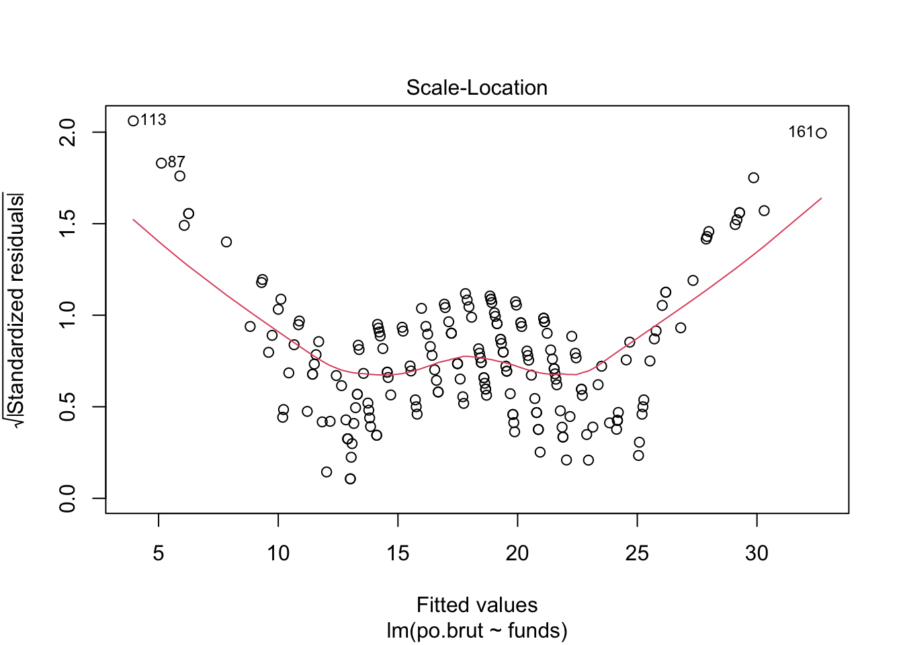
#Testing normal population assumption (residuals vs. leverage)
plot(reg.output, which=5)#Testing normal population assumption (normal qq)
plot(reg.output, which=2) The linearity assumption is not met because the line that fits the data is a curve, which suggests that the data may have a nonlinear relationship. The independence assumption does not appear to be met because there is a very distinct pattern in the data as much of it is concentrated in the curved middle section between -20 and 20. The equal variance assumption is also not met because the fit line is not very close to flat, which suggests that the errors have non-constant variance. The normal population assumption is not met because the normal Q-Q plot appears to have a left skew, meaning the residuals are not likely normally distributed.
The linearity assumption is not met because the line that fits the data is a curve, which suggests that the data may have a nonlinear relationship. The independence assumption does not appear to be met because there is a very distinct pattern in the data as much of it is concentrated in the curved middle section between -20 and 20. The equal variance assumption is also not met because the fit line is not very close to flat, which suggests that the errors have non-constant variance. The normal population assumption is not met because the normal Q-Q plot appears to have a left skew, meaning the residuals are not likely normally distributed.
- Answer the question of interest based on your analysis.
With only the linear regression model, it is impossible to formulate a good answer to whether more funding in a police department will lead to fewer incidents of police brutality. Since none of the assumptions are satisfied, a linear model is not a good fit and will not make good predictions for this data. It may be possible to make better predictions if we do further analysis by transforming the data in some way.
Problem 3: Data ethics (10 points)
Describe the dataset. Considering our lecture on data ethics, what concerns do you have about the dataset? Once you perform your analysis to answer the question of interest using this dataset, what concerns might you have about the results?
The data set has data for 200 police departments in one year. In order to answer the question of interest, more analysis has to be done because the linear regression model is insufficient to make a prediction in this case. In terms of data ethics, it is concerning that police departments have control over what gets reported. For instance, they could under report the incidences of police brutality in order to make themselves look better. This means that the data may not be truly representative of this situation. Models can often reinforce biases if the models are based on biased data. This could be an issue in this case because the police have control over how many instances of brutality get reported.The results could be reflecting lower levels of brutality than are actually present, which affects our interpretation of the relationship between funding and brutality.
Assignment 4
###Chapter 3: Data Visualization
#install.packages("tidyverse")
library(tidyverse)
#these two lines downlaoded and installed the tidyverse package that is necessary for the following lines of code to work. mpg## # A tibble: 234 × 11
## manufacturer model displ year cyl trans drv cty hwy fl class
## <chr> <chr> <dbl> <int> <int> <chr> <chr> <int> <int> <chr> <chr>
## 1 audi a4 1.8 1999 4 auto… f 18 29 p comp…
## 2 audi a4 1.8 1999 4 manu… f 21 29 p comp…
## 3 audi a4 2 2008 4 manu… f 20 31 p comp…
## 4 audi a4 2 2008 4 auto… f 21 30 p comp…
## 5 audi a4 2.8 1999 6 auto… f 16 26 p comp…
## 6 audi a4 2.8 1999 6 manu… f 18 26 p comp…
## 7 audi a4 3.1 2008 6 auto… f 18 27 p comp…
## 8 audi a4 quattro 1.8 1999 4 manu… 4 18 26 p comp…
## 9 audi a4 quattro 1.8 1999 4 auto… 4 16 25 p comp…
## 10 audi a4 quattro 2 2008 4 manu… 4 20 28 p comp…
## # … with 224 more rows#This line of code shows the mpg data frame in ggplot2.ggplot(data = mpg) +
geom_point(mapping = aes(x = displ, y = hwy))
#The first line says that we want to use the mpg data frame in ggplot.
#The second line creates the mapping plot below by adding a layer of points to the graph with car's engine size on the x-axis and car's fuel efficiency on the y-axis.
#ggplot(data = <DATA>) +
# <GEOM_FUNCTION>(mapping = aes(<MAPPINGS>)) THIS IS A TEMPLATE FOR MAKING OTHER GRAPHS IN GGPLOT ggplot(data = mpg) +
geom_point(mapping = aes(x = displ, y = hwy, color = class))
#The first line of code is the same as before: it sets up that we're going to make a graph in ggplot using the mpg data frame.
#The second line includes the layer of points and adds a third variable of class to plot by using color as an aesthetic. The car classes are differentiated by color. This adds another level to the graph, which is known as scaling.It also creates a legend to explain the mapping. ggplot(data = mpg) +
geom_point(mapping = aes(x = displ, y = hwy, size = class))
#This code does a very similar as above, but instead uses size of the points as a level to distinguish the third variable. It also creates a legend to explain the mapping. ggplot(data = mpg) +
geom_point(mapping = aes(x = displ, y = hwy, alpha = class))
#Very similar as the previous codes, but this maps class to the alpha aesthetic, which distinguishes the variable by transparency.This adds another layer to the plot. It also creates a legend to explain the mapping.
ggplot(data = mpg) +
geom_point(mapping = aes(x = displ, y = hwy, shape = class))
#This code is similar again but maps class to the shape aesthetic, which distinguishes the class variable by point shape.This adds another layer to the plot.It also creates a legend to explain the mapping. ggplot(data = mpg) +
geom_point(mapping = aes(x = displ, y = hwy), color = "blue")
#This adds an aesthetic to the plot manually. The color="blue" turns all the points blue. It just adds to the appearance of the graph, but it does not convey any additional information about the variable.#ggplot(data = mpg)
#+ geom_point(mapping = aes(x = displ, y = hwy))
#This graphing code from before is not working because the + is at the beginning of the second line. It has to be the at the end of the first line in order to work. ggplot(data = mpg) +
geom_point(mapping = aes(x = displ, y = hwy)) +
facet_wrap(~ class, nrow = 2)
#This sets up the same plot we have been using, but the third row adds a level to the graph called facets. Facets are subplots that display subsets of the data separately. Now, differences in the class variable are set apart by subplots as opposed to the aesthetic levels we were adding previously.Also, nrow=2 creates 2 rows and 2 columns. ggplot(data = mpg) +
geom_point(mapping = aes(x = displ, y = hwy)) +
facet_grid(drv ~ cyl)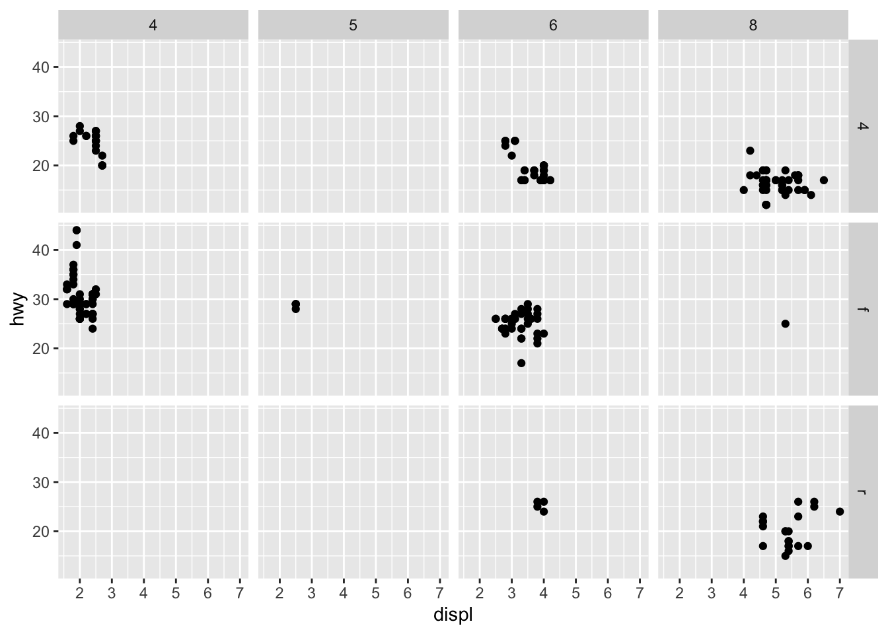
#This does something similar as above, but there is an important difference. The code facet_grid contains 2 variables and facets the plot as a combination of the 2. Also, there is no setting of rows and columns here. ggplot(data = mpg) +
geom_point(mapping = aes(x = displ, y = hwy))
#The first line says we're using ggplot and the mpg data frame. The second line establishes that we're going to use points as our geometrical object to represent our data.
ggplot(data = mpg) +
geom_smooth(mapping = aes(x = displ, y = hwy))
#The second line in this code sets smooth as our geom for the plot, which represents data in a line. ggplot(data = mpg) +
geom_smooth(mapping = aes(x = displ, y = hwy, linetype = drv))
#The addition of the third line here adds an aesthetic that sets a line type distinction. This distinction separates the data by the third variable drv. Drv classifications are now clear in this geom. ggplot(data = mpg) +
geom_smooth(mapping = aes(x = displ, y = hwy))
ggplot(data = mpg) +
geom_smooth(mapping = aes(x = displ, y = hwy, group = drv))
ggplot(data = mpg) +
geom_smooth(
mapping = aes(x = displ, y = hwy, color = drv),
show.legend = FALSE
)
#This code shows 3 different variations of the geom_smooth function. The first has all the data in one line and displ on the x-axis and hwy on the y-axis. The second plot adds the drv variable, which creates 3 different lines by category in that variable. The third plot adds the aesthetic of color to the drv variable to add further distinction. ggplot(data = mpg) +
geom_point(mapping = aes(x = displ, y = hwy)) +
geom_smooth(mapping = aes(x = displ, y = hwy))
#This code integrates multiple goems of the same data into one plot. The second line creates the point geom, and the third line creates the smooth geom. Their location under the original ggplot code and the + signs allow the two geoms to occupy one plot together. ggplot(data = mpg, mapping = aes(x = displ, y = hwy)) +
geom_point() +
geom_smooth()
#This code makes the same plot as above, but the variables are determined in the first line rather than the subsequent two. This makes it easier to change the x and y-axes if we want a different display because the variables are in one location of the code as opposed to two. ggplot(data = mpg, mapping = aes(x = displ, y = hwy)) +
geom_point(mapping = aes(color = class)) +
geom_smooth()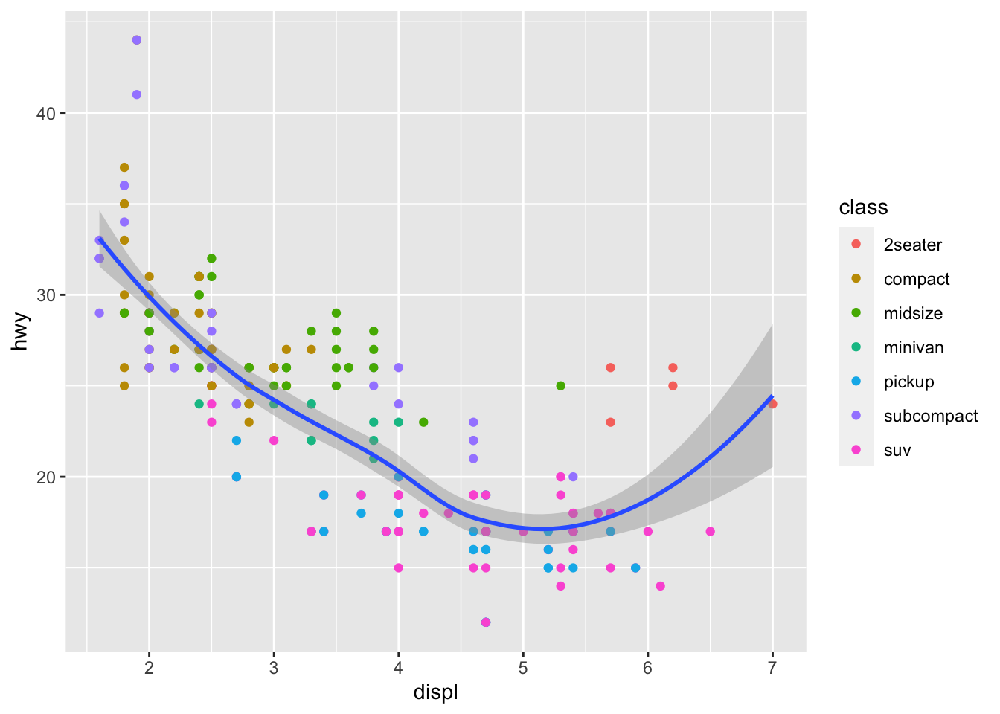
#This code creates a similar plot as above, but in the second line it adds color as an aesthetic to the point layer of the display.ggplot(data = mpg, mapping = aes(x = displ, y = hwy)) +
geom_point(mapping = aes(color = class)) +
geom_smooth(data = filter(mpg, class == "subcompact"), se = FALSE)
#This code creates a very similar plot but the third line turns the geom_smooth plot into only a representation of the "subcompact" subset of the data. ggplot(data = diamonds) +
geom_bar(mapping = aes(x = cut))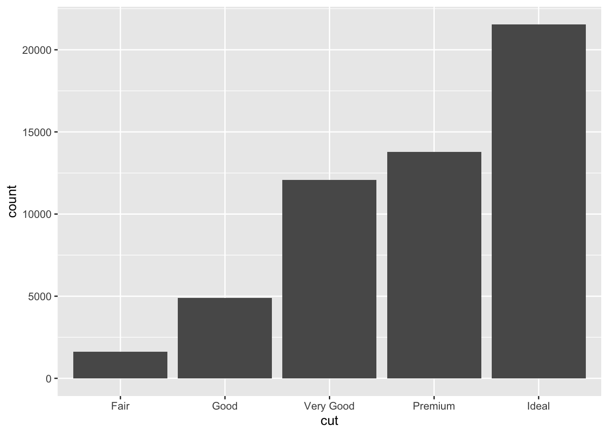
#The first line identifies diamonds as the data set we are using. The second line creates a bar plot with cut variable on the x-axis and count on the y-axis. ggplot(data = diamonds) +
stat_count(mapping = aes(x = cut))
#This code creates the same plot as above, because the geom_bar and stat_count code functions are interchangeable. demo <- tribble(
~cut, ~freq,
"Fair", 1610,
"Good", 4906,
"Very Good", 12082,
"Premium", 13791,
"Ideal", 21551
)
ggplot(data = demo) +
geom_bar(mapping = aes(x = cut, y = freq), stat = "identity")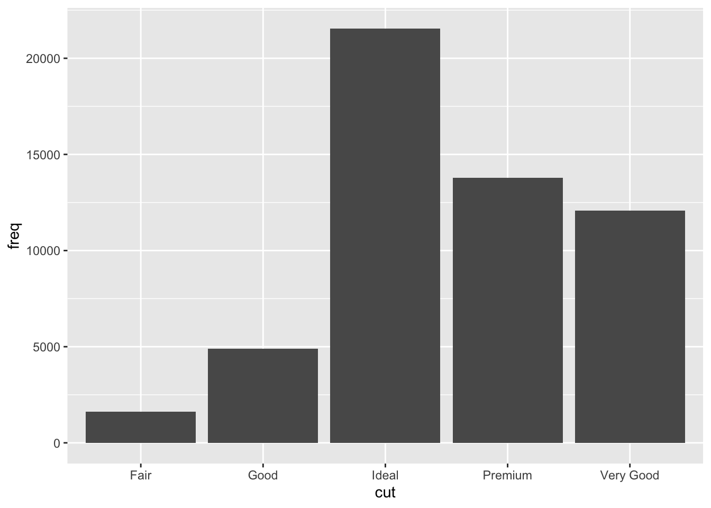
#The final line of code changes the geom_bar default stat from count to identity. This maps the height of the bars to raw y variable values.ggplot(data = diamonds) +
geom_bar(mapping = aes(x = cut, y = stat(prop), group = 1))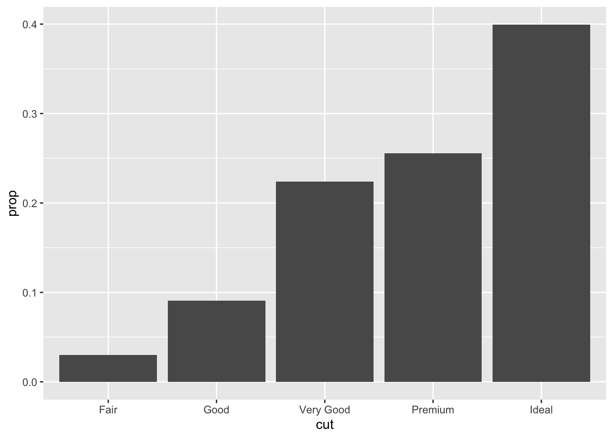
#This code creates a bar chart of proportion as opposed to count. ggplot(data = diamonds) +
stat_summary(
mapping = aes(x = cut, y = depth),
fun.min = min,
fun.max = max,
fun = median
)
#This code creates a visual summary of the data with variables cut and depth. It summarizes the depth values for each unique cut value. ggplot(data = diamonds) +
geom_bar(mapping = aes(x = cut, colour = cut))
ggplot(data = diamonds) +
geom_bar(mapping = aes(x = cut, fill = cut))
#This code takes the original bar chat of cut and count of the diamond data set and adds color to the bars that differ based on x-value designation. The colour function in the second line of code makes colored borders of the bars. The fill function colors each bar fully. ggplot(data = diamonds) +
geom_bar(mapping = aes(x = cut, fill = clarity))
#This code maps the fill aesthetic to another variable, clarity. Now the colors are stacked withing the cut bars and refer to levels of clarity. ggplot(data = diamonds, mapping = aes(x = cut, fill = clarity)) +
geom_bar(alpha = 1/5, position = "identity")
ggplot(data = diamonds, mapping = aes(x = cut, colour = clarity)) +
geom_bar(fill = NA, position = "identity")
#The first line of the code makes the the bar plot with the cut variable on the axis and the clarity variable as the color fill. The next line places each object precisely where it falls in the graph, which necessitates making the bars slightly transparent. This is accomplished by setting alpha to a small value. The following line creates a plot of the same variables, but uses colour instead of fill. The final line makes the bars completely transparent by making fill=NA ggplot(data = diamonds) +
geom_bar(mapping = aes(x = cut, fill = clarity), position = "fill")
#This is another similar plot but the position is set to "fill," which makes all of the bars the same height. With same height bars, it becomes easier to compare the color difference across x-variable groups. ggplot(data = diamonds) +
geom_bar(mapping = aes(x = cut, fill = clarity), position = "dodge")
#Instead of stacking the overlapping objects, setting the position to "dodge" displays them side-by-side, which also helps make comparison easier. ggplot(data = mpg) +
geom_point(mapping = aes(x = displ, y = hwy), position = "jitter")#The first line established mpg as our data set. The second line creates a scatter plot with displ on the x-axis and hwy on the y-axis. Setting the position to "jitter" in the third line avoids the issue over plotting by adding a little randomness to each point. ggplot(data = mpg, mapping = aes(x = class, y = hwy)) +
geom_boxplot()
ggplot(data = mpg, mapping = aes(x = class, y = hwy)) +
geom_boxplot() +
coord_flip()
#This code creates a boxplot with class on the x-axis and hwy on the y-axis. It then creates this plot again and uses coord_flip to flip the x and y axes. nz <- map_data("nz")
ggplot(nz, aes(long, lat, group = group)) +
geom_polygon(fill = "white", colour = "black")
ggplot(nz, aes(long, lat, group = group)) +
geom_polygon(fill = "white", colour = "black") +
coord_quickmap()
#This code creates a map of New Zealand. The fourth and fifth lines then create the same map and add to it in line 6. It uses coord_quickmap to correctly set the aspect ratio, so it does not appear distorted.bar <- ggplot(data = diamonds) +
geom_bar(
mapping = aes(x = cut, fill = cut),
show.legend = FALSE,
width = 1
) +
theme(aspect.ratio = 1) +
labs(x = NULL, y = NULL)
bar + coord_flip()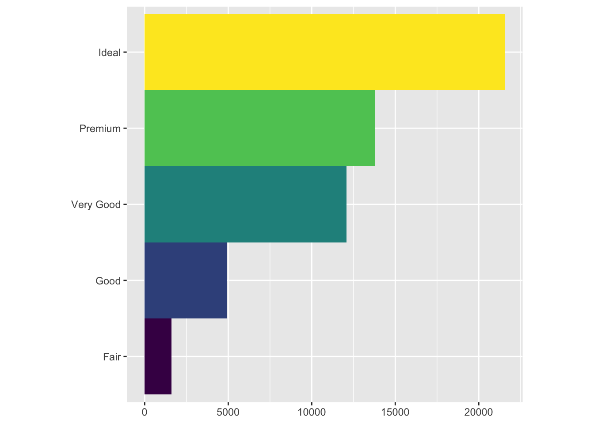
bar + coord_polar()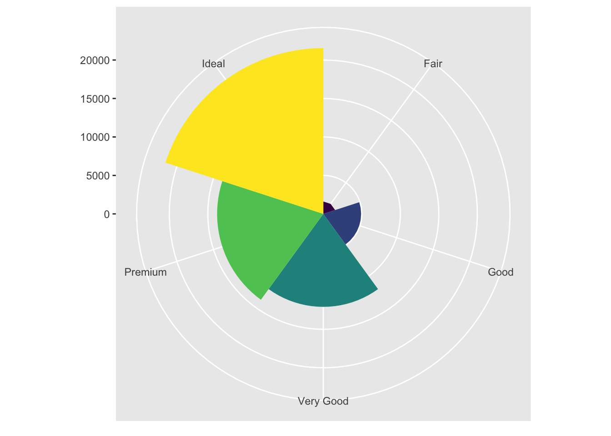
#The first part of this code creates a colored bar plot of the diamonds data set with cut on the x-axis and the fill criteria. It then flips the x and y-axes and uses polar coordinates (in the last two lines of the code), which allows comparisons to be drawn betweem the bar chart and the Coxcomb chart. #ggplot(data = <DATA>) +
# <GEOM_FUNCTION>(
# mapping = aes(<MAPPINGS>),
# stat = <STAT>,
# position = <POSITION>
# ) +
# <COORDINATE_FUNCTION> +
# <FACET_FUNCTION>
#This is a template that contains all 7 of the ggplot2 parameters covered above. ###Chapter 28: Graphics for Communication
#install.packages("ggrepel")
#install.packages("viridis")
library(ggrepel)
library(viridis)
#These 4 lines of code install and download the ggrepel and viridis codes to be used below. ggplot(mpg, aes(displ, hwy)) +
geom_point(aes(color = class)) +
geom_smooth(se = FALSE) +
labs(title = "Fuel efficiency generally decreases with engine size")
#This code creates a point geom plot and a line geom plot for the variables displ and hwy. The point plot also includes colors based on the variable class. The labs function allows the addition of a plot title. ggplot(mpg, aes(displ, hwy)) +
geom_point(aes(color = class)) +
geom_smooth(se = FALSE) +
labs(
title = "Fuel efficiency generally decreases with engine size",
subtitle = "Two seaters (sports cars) are an exception because of their light weight",
caption = "Data from fueleconomy.gov"
)
#This code creates the same plot as above but adds both a subtitle and a caption in addition to the plot title. ggplot(mpg, aes(displ, hwy)) +
geom_point(aes(colour = class)) +
geom_smooth(se = FALSE) +
labs(
x = "Engine displacement (L)",
y = "Highway fuel economy (mpg)",
colour = "Car type"
)
#This creates the same plot again but uses labs to to assign axis titles and the color legend. df <- tibble(
x = runif(10),
y = runif(10)
)
ggplot(df, aes(x, y)) +
geom_point() +
labs(
x = quote(sum(x[i] ^ 2, i == 1, n)),
y = quote(alpha + beta + frac(delta, theta))
)#This code allows you to put a mathematical equation as the axis label as opposed to string of text. best_in_class <- mpg %>%
group_by(class) %>%
filter(row_number(desc(hwy)) == 1)
ggplot(mpg, aes(displ, hwy)) +
geom_point(aes(colour = class)) +
geom_text(aes(label = model), data = best_in_class)
#This code creates a geom point plot and adds annotations to the plot. ggplot(mpg, aes(displ, hwy)) +
geom_point(aes(colour = class)) +
geom_label(aes(label = model), data = best_in_class, nudge_y = 2, alpha = 0.5)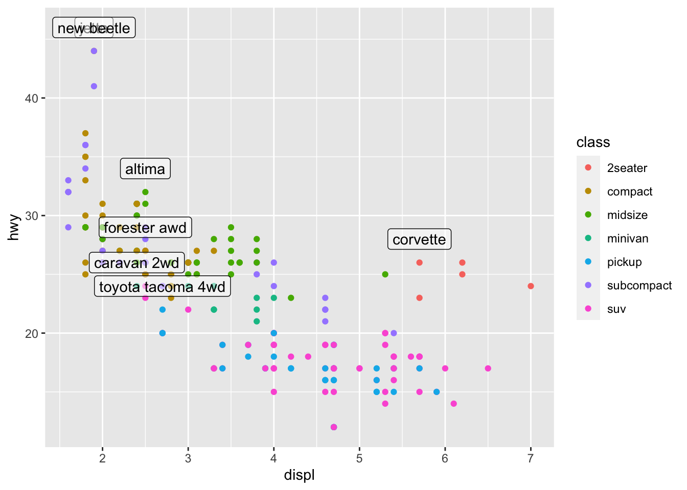
#This code creates a similar plot, but the addition of the geom_label code puts a rectangle behind the text, which makes it easier to read. Also, nudge_y moves the labels slightly above the points they refer to. ggplot(mpg, aes(displ, hwy)) +
geom_point(aes(colour = class)) +
geom_point(size = 3, shape = 1, data = best_in_class) +
ggrepel::geom_label_repel(aes(label = model), data = best_in_class)
#This code adds a second layer of labels and large hollow points that makes the annotations even more clear. class_avg <- mpg %>%
group_by(class) %>%
summarise(
displ = median(displ),
hwy = median(hwy)
)
#> `summarise()` ungrouping output (override with `.groups` argument)
ggplot(mpg, aes(displ, hwy, colour = class)) +
ggrepel::geom_label_repel(aes(label = class),
data = class_avg,
size = 6,
label.size = 0,
segment.color = NA
) +
geom_point() +
theme(legend.position = "none")#This code replaces the color legend with labels directly on the plot. The last line removes the traditional legend. label <- mpg %>%
summarise(
displ = max(displ),
hwy = max(hwy),
label = "Increasing engine size is \nrelated to decreasing fuel economy."
)
ggplot(mpg, aes(displ, hwy)) +
geom_point() +
geom_text(aes(label = label), data = label, vjust = "top", hjust = "right")
#This code creates geom point plot with one single label on the plot. It also uses a specific data frame by using the summarise function. label <- tibble(
displ = Inf,
hwy = Inf,
label = "Increasing engine size is \nrelated to decreasing fuel economy."
)
ggplot(mpg, aes(displ, hwy)) +
geom_point() +
geom_text(aes(label = label), data = label, vjust = "top", hjust = "right")
#This code creates a very similar plot as above but moves the label to the border of the plot using the vjust and hjust codes. "Increasing engine size is related to decreasing fuel economy." %>%
stringr::str_wrap(width = 40) %>%
writeLines()## Increasing engine size is related to
## decreasing fuel economy.#> Increasing engine size is related to
#> decreasing fuel economy.
#This code creates the same plot but uses the more succinct command stringr::str_wrap, which automatically adds line breaks by giving a space to designate characters per line. ggplot(mpg, aes(displ, hwy)) +
geom_point(aes(colour = class))
#This code creates a geom point plot for the displ and hwy variables of the mpg data set. The colour function applies the class variable in the form of coloring the dots differently. ggplot(mpg, aes(displ, hwy)) +
geom_point(aes(colour = class)) +
scale_x_continuous() +
scale_y_continuous() +
scale_colour_discrete()
#This code creates the same plot as above but adds scale parameters. ggplot(mpg, aes(displ, hwy)) +
geom_point() +
scale_y_continuous(breaks = seq(15, 40, by = 5))
#This code creates a point geom plot for the displ and hwy variable of the mpg data set. It then sets the scale axes and uses the breaks function to place the ticks at certain values. This makes the x-axis range from 15 to 40 with ticks at every 5th value. ggplot(mpg, aes(displ, hwy)) +
geom_point() +
scale_x_continuous(labels = NULL) +
scale_y_continuous(labels = NULL)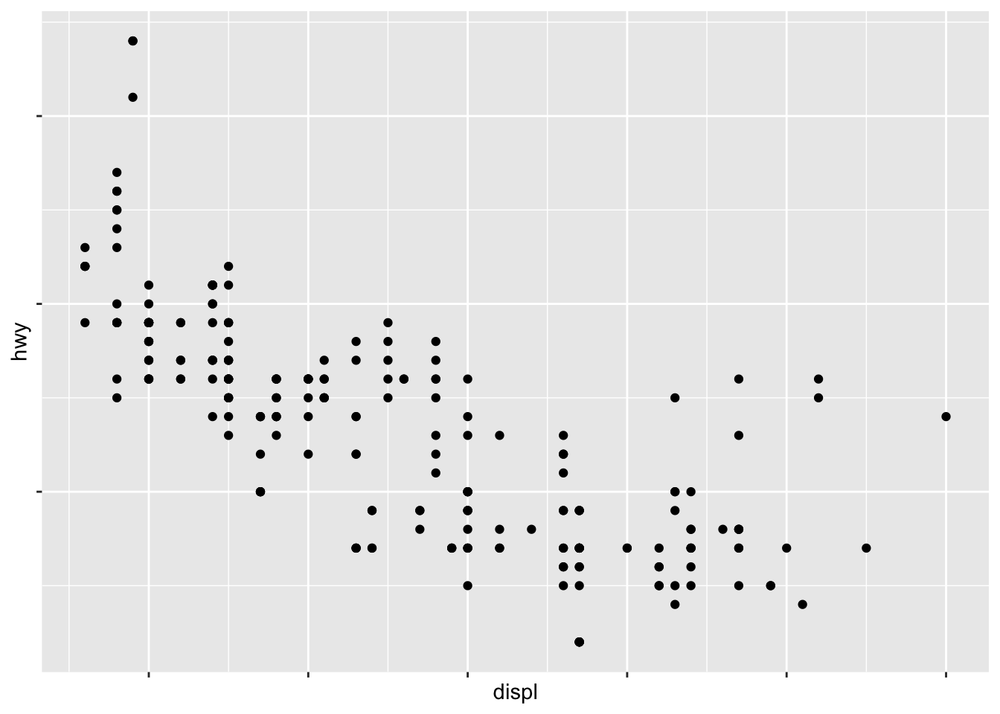
#This code create a similar plot with the same data and variables but removes the values from the axes by setting their scales to null. presidential %>%
mutate(id = 33 + row_number()) %>%
ggplot(aes(start, id)) +
geom_point() +
geom_segment(aes(xend = end, yend = id)) +
scale_x_date(NULL, breaks = presidential$start, date_labels = "'%y")
#This plot shows what year each US president started and ended their terms. This means that each president on the y-axis will correspond to more than one of the years on the x-axis. Thus uses the breaks function to show exactly where the observations occur. base <- ggplot(mpg, aes(displ, hwy)) +
geom_point(aes(colour = class))
base + theme(legend.position = "left")
base + theme(legend.position = "top")
base + theme(legend.position = "bottom")
base + theme(legend.position = "right") # the default
#This code creates 4 different versions of the same geom point plot using the displ and hwy variables of the mpg data set. It also uses color to distinguish the class variable. Each of the different versions of this plot uses the legend.position function to control where on the plot the legend is drawn. This is a theme() setting. ggplot(mpg, aes(displ, hwy)) +
geom_point(aes(colour = class)) +
geom_smooth(se = FALSE) +
theme(legend.position = "bottom") +
guides(colour = guide_legend(nrow = 1, override.aes = list(size = 4)))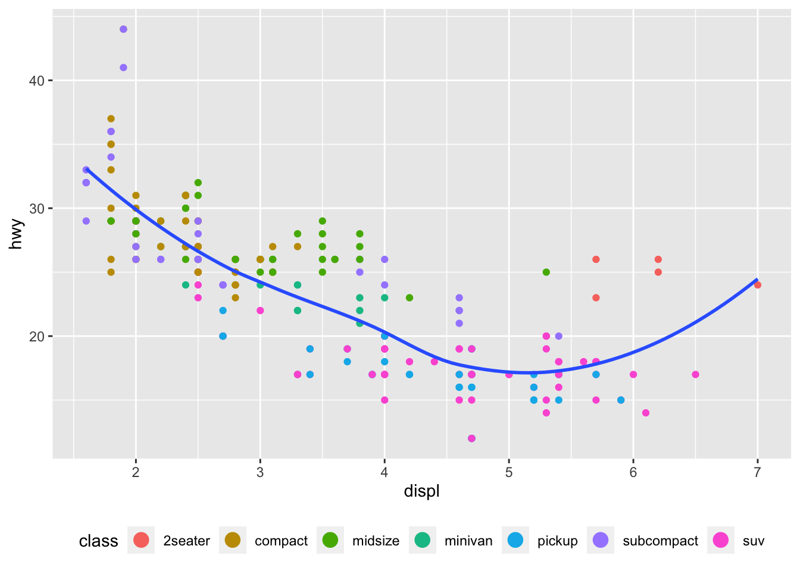
#> `geom_smooth()` using method = 'loess' and formula 'y ~ x'
#This code plots the same variables as before, using both a point geom and a smooth geom with color representing the class variable. The code also puts the legend at the bottom. Nrow sets the number of rows for the legend (in this case 1) and override.aes makes the points of the legend bigger. ggplot(diamonds, aes(carat, price)) +
geom_bin2d()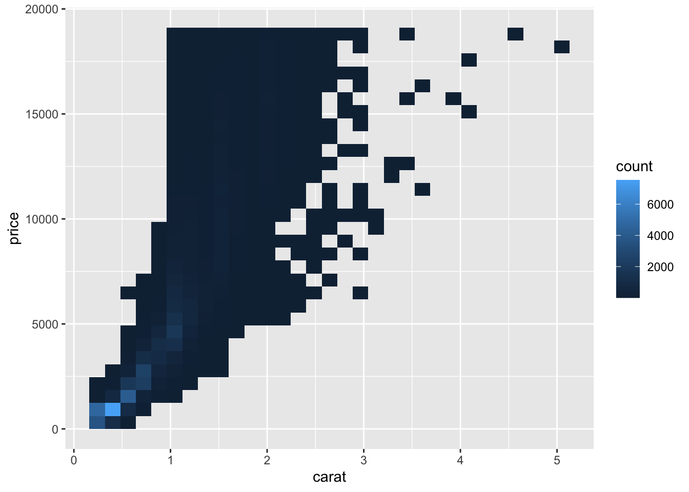
ggplot(diamonds, aes(log10(carat), log10(price))) +
geom_bin2d()
#This code makes two plots of carat and price from the diamonds data set. The first uses a regular scale, while the second uses a log10 scale to make the relationship between the variable counts more obvious. ggplot(diamonds, aes(carat, price)) +
geom_bin2d() +
scale_x_log10() +
scale_y_log10()
#This code creates a similar plot, but the scale of the axes is changed through a scale function and not an aesthetic function, which ensures that the axes are labelled on the orginal scale. ggplot(mpg, aes(displ, hwy)) +
geom_point(aes(color = drv))
ggplot(mpg, aes(displ, hwy)) +
geom_point(aes(color = drv)) +
scale_colour_brewer(palette = "Set1")
#This code creates 2 versions of the same scatter plot but the second sets a specific color palette, while the first just employs the default. ggplot(mpg, aes(displ, hwy)) +
geom_point(aes(color = drv, shape = drv)) +
scale_colour_brewer(palette = "Set1")
#This code creates a scatter plot of the same data, but it adds shape as an aesthetic to further distinguish which group of the drv variable the points belong to. presidential %>%
mutate(id = 33 + row_number()) %>%
ggplot(aes(start, id, colour = party)) +
geom_point() +
geom_segment(aes(xend = end, yend = id)) +
scale_colour_manual(values = c(Republican = "red", Democratic = "blue"))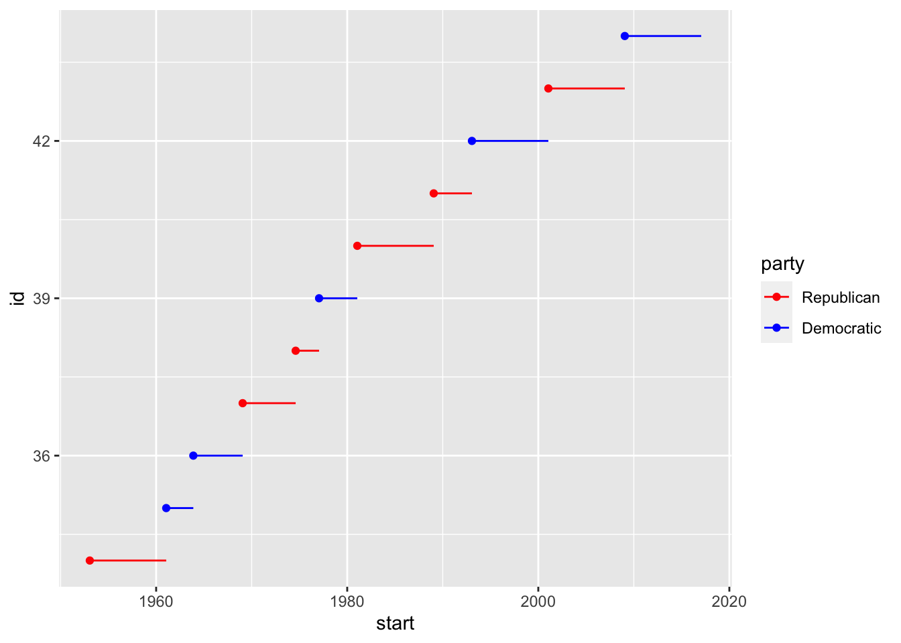
#This code creates the same presidential plot from before but it adds party as a third variable to categorize the data. The scale_colour_manual allows for the colors to be included and put into the legend. df <- tibble(
x = rnorm(10000),
y = rnorm(10000)
)
ggplot(df, aes(x, y)) +
geom_hex() +
coord_fixed()ggplot(df, aes(x, y)) +
geom_hex() +
viridis::scale_fill_viridis() +
coord_fixed()#This code creates 2 versions of the same hex plot. The first one allows the colors to be default. The second plot, however, uses the viridis package to apply a specific color scheme. This is accomplished by viridis::scale_fill_viridis/ggplot(mpg, mapping = aes(displ, hwy)) +
geom_point(aes(color = class)) +
geom_smooth() +
coord_cartesian(xlim = c(5, 7), ylim = c(10, 30))
mpg %>%
filter(displ >= 5, displ <= 7, hwy >= 10, hwy <= 30) %>%
ggplot(aes(displ, hwy)) +
geom_point(aes(color = class)) +
geom_smooth()
#This code creates 2 plots that contain both points and smooth lines of the displ, hwy, and class variable of the mpg data set. The coord-cartesian line of code zooms in on a specific region of the plot. suv <- mpg %>% filter(class == "suv")
compact <- mpg %>% filter(class == "compact")
ggplot(suv, aes(displ, hwy, colour = drv)) +
geom_point()
ggplot(compact, aes(displ, hwy, colour = drv)) +
geom_point()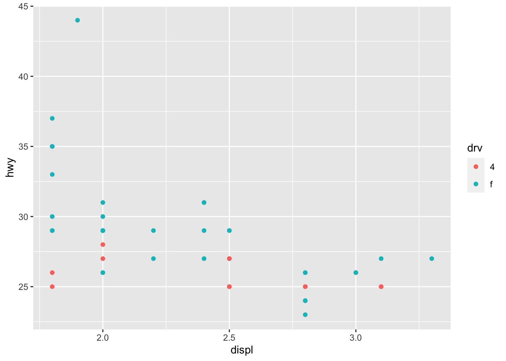
#This code creates 2 plots with displ, hwy, and drv. One of the them plots the suv class of cars and one of them plots the compact class of cars. This makes them difficult to compare because the scales have different ranges. x_scale <- scale_x_continuous(limits = range(mpg$displ))
y_scale <- scale_y_continuous(limits = range(mpg$hwy))
col_scale <- scale_colour_discrete(limits = unique(mpg$drv))
ggplot(suv, aes(displ, hwy, colour = drv)) +
geom_point() +
x_scale +
y_scale +
col_scale
ggplot(compact, aes(displ, hwy, colour = drv)) +
geom_point() +
x_scale +
y_scale +
col_scale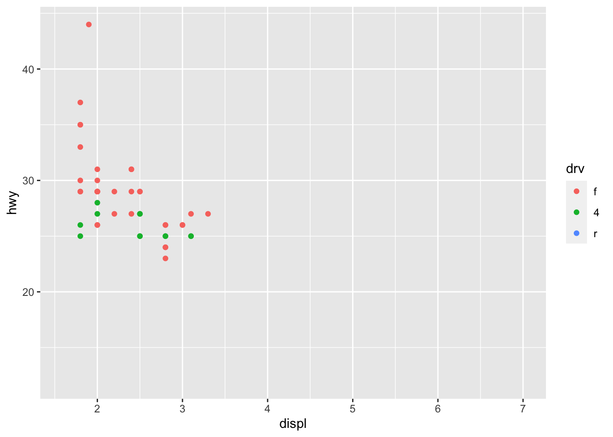
#This code improves upon the previous plots by using the limits function to share the scales across both plots. These plots contain the same information as above, but the standardization of the scale makes them easier to compare. ggplot(mpg, aes(displ, hwy)) +
geom_point(aes(color = class)) +
geom_smooth(se = FALSE) +
theme_bw()
#This code creates a point and smooth line plot of the displ, hwy, and class variables of the mpg data set. It uses theme_bw to create a white background with grid lines. ggplot(mpg, aes(displ, hwy)) + geom_point()
#This code creates a scatter plot of displ and hwy with no added color. ggsave("my-plot.pdf")
#> Saving 7 x 4.33 in image
#This code saves an image of the above plot. Final Project
Marijuana Possession Charges
An exploratory look at the relationship between race and sentencing outcomes
INTRODUCTION
Following Nixon’s call for the War on Drugs in June 1971, there was a push for mandatory sentencing in drug-related crimes, effectively expanding the role of the federal government in drug-related arrests and sentencing (Drug Policy Alliance, 2021). Recently, there has been an uptick of discussion in the political world and in pop culture of the United States on the War on Drugs, namely regarding the adjustment of the severity of sentencing and its disproportionate effect on minority communities. These racial disparities are particularly discussed in regards to marijuana-related charges, as Black Americans have been found to be four times more likely to be arrested for marijuana charges than White Americans and six times more likely to be incarcerated for drug-related charges (Rahamatulla, 2017). Many agree that a solution to the disproportionate effects of drug-related charges needs to be created, and through the work discussed in this paper, we hope to focus our attention on sentencing outcomes and race for marijuana charges to further understand where disparities lie. Due to the increasing prevalence and history of drug-related sentencing, we wanted to examine the relationships in drug-related sentencing between race and sentencing likelihood, especially focusing on marijuana. We expect, from past studies examined in and outside of this course, that the rate of prison sentencing for Black people would be higher than the rate of prison sentencing of white people. These motivations lead to the research question: Are Black people sentenced federally to prison for marijuana at a higher rate than white people?
DESCRIPTION OF THE DATA USED
The data set we utilized for this review is a record of federal criminal sentences as provided by the US Sentencing Committee (United States Sentencing Commission, 2007). This data set includes information on federal cases sentenced under the guidelines of the Sentencing Reform Act of 1984. Because of the research question prompting this paper, we chose to look at only cases where the defendant was charged with possession of marijuana. We used the “Drug Type 1” variable in the dataset to create a subset with these cases, as this variable indicated that marijuana was the highest penalty incurring drug the defendant was found with. Because we wanted to look at the relationship between race and being sentenced to prison, our independent variable was the defendant’s race (either Black or white cases) and our dependent variable was the type of sentence (either prison or no prison). We extrapolated specifically Black and white instantiations in the race variable so as to control for the number of independent variables being observed. We also decided to control for the defendant’s age, the defendant’s gender, and whether or not the defendant has a criminal record. We thought that these three variables would be the most influential in determining sentence type, both as legal (criminal record) and extralegal (age and gender) variables.
EXPLORATORY DATA ANALYSIS
 To most successfully represent the variables being examined in this paper, we chose to create a bar plot representing the proportion of people sentenced and not sentenced to prison for both races included in the dataset.
To most successfully represent the variables being examined in this paper, we chose to create a bar plot representing the proportion of people sentenced and not sentenced to prison for both races included in the dataset.
REPRESENTATIVE MODEL AND DIAGNOSTIC INFORMATION
For the sake of our data set, we used a logistic regression. A logistic regression model is very similar to a linear regression; however, it is used to evaluate relationships between binary variables. Because our variables - race and sentencing outcome - both have only two options for the purpose of our study, we can examine this relationship between the binaries. Rather than a standard line, the graph of fit is a logit. The application of this model is to categorical variables, and the dependent variable matches the variable type of the independent.
LOGISTIC REGRESSION ASSUMPTIONS

For the sake of our data set, we used a logistic regression. A logistic regression model is very similar to a linear regression; however, it is used to evaluate relationships between binary variables. Because our variables - race and sentencing outcome - both have only two options for the purpose of our study, we can examine this relationship between the binaries. Rather than a standard line, the graph of fit is a logit. The application of this model is to categorical variables, and the dependent variable matches the variable type of the independent.
The Residual vs. Fitted Plots in this figure look to see if there are any curvilinear trends in the plots that were originally missed. Because logistic regression is already curvilinear - as demonstrated by the logit that was previously displayed - these plots do not tell us any definitive information on the validity of this regression.
The QQ plot in the figure determines if the residuals are normally distributed. This plot is not indicative of anything definitive either because residuals do not have to be normally distributed in a logistic regression.
The Residuals vs. Leverage plots help identify outliers, but this plot too is not particularly useful because the results are not definitive either. From the models demonstrated in the assumptions, we do not gain information that definitively determines the strength of the logistic regression model for our data set, but the assumption display is crucial to data analysis so as to examine any particularly significant data that strays from the norm.
Regression Model
##
## Logistic Regression Outputs
## ================================================
## Dependent variable:
## ----------------------------
## prison
## Baseline Controls
## (1) (2)
## ------------------------------------------------
## Black -0.684*** -0.845***
## (0.132) (0.140)
##
## Ages 70-97 0.260
## (1.036)
##
## Ages 50-69 0.100
## (0.207)
##
## Ages 30-49 0.441***
## (0.116)
##
## Female -1.194***
## (0.120)
##
## No Criminal History 0.071
## (0.117)
##
## Constant 2.829*** 2.881***
## (0.060) (0.102)
##
## ------------------------------------------------
## Observations 6,123 6,123
## ================================================
## Note: *p<0.1; **p<0.05; ***p<0.01Looking at the baseline regression, we can see that Black people in the dataset were less likely to be sentenced to prison at a significant rate. Similarly, looking at the controlled regression, we can see that Black people were more likely to not be sentenced when compared to white people in the dataset. We split the age variable into three groups (of 16-29, 30-49, 50-69, and 70-97), leaving the 16-29 group out of the regression as our control because we thought that this group would be most likely to be in possession of marijuana. To our surprise, all three age groups were more likely to be sentenced to prison for marijuana charges than people that were 16-29. This may be due to the fact that there could have been more people in these other groups, or there could have been a large number of minors in the 16-29 group that were not sentenced to prison. We split the gender variable into male or female, leaving out the male group since we thought that this group would be more likely to be sentenced to prison. Looking at the model, we can see that this is true, and females were significantly less likely to be sentenced to prison than males. Finally, we split the criminal history variable into yes or no groups, leaving out the yes group since we thought that this group would be more likely to be sentenced to prison. To our surprise, having no criminal history made the defendant more likely to be sentenced to prison, but by an insignificant amount.
CAUSAL ANALYSIS
Because we used the “Drug Type 1” variable, we assumed that the defendant was either only found with marijuana or the other drug(s) did not incur any penalty. This did not take into account whether or not the defendant was charged with something incurring a felony charge, such as possession of drug paraphernalia or intent to sell. In an ideal world, our data would have been clear about what the defendant was actually charged with on all fronts, rather than just what drugs they were in possession of at the time of their arrest. We also only looked at about 6,000 observations, since we dropped everyone who was not Black or white. However, there were more white people in the dataset and more white people in prison in the dataset, so the groups may not have been proportional.
DAG:
BEING ARRESTED
^ |
| v
RACE -------> BEING SENTENCED TO PRISONAdditionally, the DAG portrays the situation where the defendant’s race determines whether or not they will be arrested, and therefore the arrest determines whether they will be sentenced. Not everyone who is caught with marijuana is arrested, and not everyone who is arrested for marijuana charges is convicted. Similarly, the biases of the police and prosecutors could be at play, influencing both the arrest and sentence outcome. Because of these confounders, we would not be able to conclude that there was a causal analysis.
LIMITATIONS AND FUTURE DIRECTIONS
While setting out to examine sentencing outcomes and their relationship to race for marijuana-related charges, we observed a series of confounds:
- Sentencing charges are not equated to arrests. It is worth looking in the future into the relationship between arrests and race for marijuana-related charges.
- Our analysis did not include sentencing duration. Sentencing severity is a large component of the discussion for racial disparities in sentencing, not just the binary of whether someone was sentenced or not.
- Though we controlled for different factors such as past arrests because they are crucial in determining sentencing outcomes they should be analyzed further in conjunction with the information we observed for future studies.
This dataset is also a really interesting example of how a failure through data analysis can lead to false projections and misleading statistics. This is also a useful showcase of how easily data can also be manipulated depending on the neglect of specific outliers or parameters for the research. As previously stated, this data set is very limited. We don’t feel it can answer our research question in an accurate way, but it still provides a good lesson on the sensitivity of datasets with outlying variables and unobserved confounders.
For future research, it could be extremely valuable to look at the current different sentencing rates across states with different laws regarding the legality and decriminalization of marijuana. All marijuana usage (whether medical or recreational) is a federal crime, so theoretically everyone in the dataset should have been arrested regardless of race. However, this is not the case, and it is important to look at how there are disparities between federal and state sentences. Additionally, state police and prosecutors have much more discretion in deciding who to arrest, and what crimes to charge. We also were only able to look at sentencing as a binary factor without the important information of arrests records in general or whether or not the defendant has been arrested for marijuana in the past. In the future, we want to do a more well-rounded in-depth data analysis including everyone who was arrested (regardless of their conviction status), as well as the state’s current laws regarding marijuana.
References
Commission, U. S. S. (2014, June 25). Monitoring of federal criminal sentences, [united states], 2007. Monitoring of Federal Criminal Sentences, [United States], 2007. Retrieved December 12, 2021, from https://www.icpsr.umich.edu/web/NACJD/studies/22623. Cusick Director, J., Cusick, J., Director, Director, C. M. A., Montecinos, C., Director, A., Director, S. H. A., Hananel, S., Oduyeru Manager, L., Oduyeru, L., Manager, Gordon Director, P., Gordon, P., Director, J. P. D., Parshall, J., Director, D., Pearl, B., Perez, M., Chung, E., … Simpson, E. (2021, October 28). Ending the war on drugs: By the numbers. Center for American Progress. Retrieved December 12, 2021, from https://www.americanprogress.org/article/ending-war-drugs-numbers/. Rahamatulla, A. (2017, March 23). The War on Drugs has failed. what’s next? Ford Foundation. Retrieved December 12, 2021, from https://www.fordfoundation.org/just-matters/just-matters/posts/the-war-on-drugs-has-failed-what-s-next/. We Are The Drug Policy Alliance. (n.d.). A history of the Drug War. Drug Policy Alliance. Retrieved December 12, 2021, from https://drugpolicy.org/issues/brief-history-drug-war.